if (!requireNamespace("reticulate", quietly = TRUE)) {
install.packages("reticulate")
}
library(reticulate)
use_python("C:/Users/alina/AppData/Local/Programs/Python/Python312/python.exe", required = TRUE)PART 3: Data Science. Probability
Welcome to Data Science: Probability!
Мы рады, что вы присоединились к нам на этом курсе, который призван обучить вас основам теории вероятностей, которая является математической основой статистического вывода.
Обзор курса
Это третий курс из серии курсов по программе HarvardX Professional Certificate in Data Science. Курсы в рамках программы профессионального сертификата предназначены для того, чтобы подготовить вас к анализу данных в R, от простых вычислений до машинного обучения. Курсы рассчитаны на то, чтобы проходить их по порядку.
Учебник из серии курсов по науке о данных находится в свободном доступе в Интернете. Этот курс соответствует разделу учебника “Вероятность”, который начинается здесь.
Этот курс предполагает, что вы знакомы с основами математики, алгебры и логических операций. HarvardX сотрудничает с DataCamp для выполнения некоторых заданий на R, которые позволяют вам программировать непосредственно в браузерном интерфейсе. Однако вам также потребуется загрузить R и RStudio, если вы еще этого не сделали, чтобы выполнить упражнения на платформе edX.
Используя сочетание вводного курса с короткими видеолекциями и более самостоятельного углубленного изучения, вы сможете практиковать свои новые навыки R в реальных приложениях.
Теория вероятностей - это математическая основа статистического вывода, которая необходима для анализа данных, подверженных случайному влиянию, и, следовательно, необходима специалистам по обработке данных. В этом курсе вы изучите важные понятия теории вероятностей. Мотивацией для этого курса являются обстоятельства, связанные с финансовым кризисом 2007-2008 годов. Отчасти причиной этого финансового кризиса стало то, что риск некоторых ценных бумаг, продаваемых финансовыми институтами, был недооценен. Чтобы начать понимать это очень сложное событие, нам нужно понять основы теории вероятностей. Мы познакомим вас с такими важными понятиями, как случайные величины, независимость, моделирование методом Монте-Карло, ожидаемые значения, стандартные ошибки и центральная предельная теорема. Эти статистические концепции являются фундаментальными для проведения статистических тестов данных и понимания того, являются ли анализируемые вами данные, скорее всего, результатом экспериментального метода или случайности. Статистический вывод, рассматриваемый в следующем курсе этой серии, основан на теории вероятностей.
На этом курсе вы узнаете:
Важные понятия в теории вероятностей, включая случайные величины и независимость
Как выполнить моделирование методом Монте-Карло
Значение ожидаемых значений и стандартных ошибок и как их вычислить в R
Важность центральной предельной теоремы
Обзор курса
Раздел 1:Дискретная вероятность. Вы узнаете об основных принципах вероятности, связанных с категориальными данными, на примерах карточных игр.
Раздел 2:Непрерывная вероятность. Вы узнаете об основных принципах теории вероятностей, связанных с числовыми и непрерывными данными.
Раздел 3:Случайные величины, модели выборки и Центральная предельная теорема. Вы узнаете о случайных величинах (числовых результатах, получаемых в результате случайных процессов), о том, как моделировать процедуры генерации данных, извлекаемых из урны, и о центральной предельной теореме, которая применима к большим размерам выборки.
Раздел 4: Большой короткий. Вы узнаете, как определяются процентные ставки и как некоторые неверные предположения привели к финансовому кризису 2007-2008 годов.
Introduction to Probability
РАФАЭЛЬ ИРИЗАРРИ:
Мотивацией для этого модуля являются обстоятельства, связанные с финансовым кризисом 2007-2008 годов. Отчасти причиной этого финансового кризиса было что риск некоторых ценных бумаг, продаваемых финансовыми учреждениями , был недооценен. В частности, риск ипотечных ценных бумаг и обеспеченных долговых обязательств, или CDO, был сильно недооценен. Эти два объекта были проданы по ценам, которые предполагают , что большинство домовладельцев будут вносить свои ежемесячные платежи, и что вероятность того, что этого не произойдет, была низкой. Сочетание факторов привело к гораздо большему числу дефолтов, чем ожидалось. Это привело к резкому падению цен на эти ценные бумаги. Как следствие, банки потеряли так много денег что они нуждались в государственной помощи, чтобы избежать полного закрытия. Чтобы начать понимать это очень сложное событие, нам нужно понять основы теории вероятностей. Мы познакомим вас с такими важными понятиями, как случайные величины, независимость, моделирование методом Монте-Карло, ожидаемые значения, стандартные ошибки, предел погрешности и центральная предельная теорема. Прежде чем мы начнем пытаться понять финансовый кризис с помощью теории вероятностей, мы приведем несколько примеров, связанных с азартными играми, поскольку они просты и наглядны.
Section 1: Discrete Probability
1.1 Introduction to Discrete Probability
Key Points
Вероятность события - это доля случаев, когда событие происходит, когда мы повторяем эксперимент независимо при одних и тех же условиях.
\(\mbox{Pr}(A) = \mbox{probability of event A}\)
Событие определяется как результат, который может произойти, когда что-то происходит случайно.
Мы можем определить вероятности, связанные с дискретными переменными (выбор красной бусинки, выбор 48 демократов и 52 республиканцев из 100 вероятных избирателей) и непрерывными переменными (рост более 6 футов).
Не по теме: Просто пример panel-tabset
1.1.1 Using the mean Function for Probability
Важное применение функции mean()
В R применение функции mean() к логическому вектору возвращает долю элементов, которые являются истинными. Очень часто для вычисления вероятностей таким образом используется функция mean(), и мы будем делать это на протяжении всего курса.
Предположим, у вас есть векторные шарики из предыдущего видео:
beads <- rep(c("red", "blue"), times = c(2,3))
beads
[1] "red" "red" "blue" "blue" "blue"Чтобы определить вероятность случайного выпадения синего шарика, вы можете запустить:
mean(beads == "blue")
[1] 0.6Этот код разбит на шаги внутри R. Сначала R вычисляет логический оператор beads == "blue", который генерирует вектор:
FALSE FALSE TRUE TRUE TRUEКогда применяется функция mean, R преобразует логические значения в числовые, изменяя значение TRUE на 1 и значение FALSE на 0: 0 0 1 1 1
Таким образом, среднее значение нулей и единиц дает соотношение TRUE значений. Как мы узнали и будем продолжать видеть, вероятности напрямую связаны с долей событий, удовлетворяющих тому или иному требованию.
DataCamp Assessment: Introduction to Discrete Probability
Exercise 1. Probability of cyan (голубой) - generalized
Один шар будет извлечен случайным образом из коробки, содержащей: 3 голубых шара, 5 пурпурных шаров и 7 желтых шаров.
Какова вероятность того, что мяч будет голубым?
Уведомление
Instructions
Define a variable
pas the probability of choosing a cyan ball from the box.Print the value of
p.
cyan <- 3
magenta <- 5
yellow <- 7
p <- cyan / (magenta + cyan + yellow)
p[1] 0.2Exercise 2. Probability of not cyan - generalized
Мы определили переменную p как вероятность выбора голубого шара из коробки, содержащей: 3 голубых шара, 5 пурпурных шаров и 7 желтых шаров.
Какова вероятность того, что шарик, который вы достанете из коробки, не будет голубым?
Уведомление
Instructions
- Using the probability of choosing a cyan ball,
p, calculate the probability of choosing any other ball.
p <- cyan / (magenta + cyan + yellow)
1 - p[1] 0.8Exercise 3. Sampling without replacement - generalized
Вместо того чтобы брать только одну ничью, подумайте о том, чтобы взять две ничьи. Вы делаете второй розыгрыш, не возвращая первый розыгрыш в коробку. Мы называем это выборкой без замены.
Какова вероятность того, что первый розыгрыш будет голубым, а второй - не голубым?
Уведомление
Instrucrions
Вычислите условную вероятность
p_2выбора шара, который не является голубым, после того, как один голубой шар был извлечен из коробки.Вычислите совместную вероятность выбора как голубого шара при первом розыгрыше, так и шара, который не является голубым при втором розыгрыше, используя
p_1иp_2.
p_1 <- cyan / (cyan + magenta + yellow)
p_2 <- 12/14
p_1*p_2[1] 0.1714286Exercise 4. Sampling with replacement - generalized
Теперь повторите эксперимент, но на этот раз, сделав первый рисунок и записав цвет, верните его обратно в коробку и встряхните коробку. Мы называем это выборкой с заменой.
Какова вероятность того, что первый розыгрыш будет голубым, а второй - не голубым?
p_2 <- 12/15
p_2*p_1[1] 0.161.2 Combinations and Permutations
Ключевые моменты
Функция
paste()соединяет две строки и вставляет пробел между ними.expand.grid()выдает комбинации из 2 векторов или списков.permutations (n,r)из пакетаgtoolsперечисляют различные способы выбораrэлементов из набора изnопций, когда важен порядок.combinations (n,r)из пакетаgtoolsперечисляют различные способы выбораrэлементов из набора изnопций, когда порядок не имеет значения.
РАФАЭЛЬ ИРИЗАРРИ:
Какова вероятность того, что если я возьму 5 карт без замены, то получу все карты той же масти, что в покере называется
флешем? Здесь мы сосредоточимся на том, как использоватьR. Итак, мы собираемся использовать карточные игры в качестве примеров.Итак, давайте начнем с создания колоды карт с помощью R. Для этого мы будем использовать функцию
expand.gridи функциюpaste (). Мы используемpaste ()для создания строк путем объединения строк меньшего размера. Например, если у нас естьномеримастькарты, в двух разных переменных мы можем создать название карты, используяpaste ()следующим образом:Code: Introducing
paste()andexpand.grid()
# joining strings with paste number <- "Three" suit <- "Hearts" paste(number, suit)[1] "Three Hearts"# joining vectors element-wise with paste paste(letters[1:5], as.character(1:5))[1] "a 1" "b 2" "c 3" "d 4" "e 5"# generating combinations of 2 vectors with expand.grid expand.grid(pants = c("blue", "black"), shirt = c("white", "grey", "plaid"))pants shirt 1 blue white 2 black white 3 blue grey 4 black grey 5 blue plaid 6 black plaid
Функция
expand.gridдает нам все комбинации из 2 списка. Так, например, если у вас есть синие и черные брюки и белая, серая и клетчатая рубашка, все ваши комбинации могут быть вычислены с помощью функцииexpand.grid. Вы можете увидеть все 6 комбинаций.Итак, вот как мы создаем колоду карт. Мы определяем четыре масти, мы определяем 13 чисел, а затем создаем колоду, используя expand.grid, а затем склеиваем вместе 2 столбца, которые создает expand.grid. Теперь, когда у нас есть построенная колода, мы можем начать отвечать на вопросы о вероятности. Давайте начнем с чего-нибудь простого. Давайте еще раз проверим, что вероятность выпадения короля на первой карте равна 1 к 13. Мы просто вычисляем долю возможных исходов , удовлетворяющих нашему условию. Итак, мы создаем вектор, содержащий четыре способа, которыми мы можем получить короля. Это будет переменная
kings. А затем мы просто проверяем, какую долю колоды занимает одна из этих карт, и получаем ожидаемый ответ–0,076точки с запятой, что равно 1 из 13.Code: Generating a deck of cards
suits <- c("Diamonds", "Clubs", "Hearts", "Spades") numbers <- c("Ace", "Deuce", "Three", "Four", "Five", "Six", "Seven", "Eight", "Nine", "Ten", "Jack", "Queen", "King") deck <- expand.grid(number = numbers, suit = suits) deck <- paste(deck$number, deck$suit) # probability of drawing a king kings <- paste("King", suits) mean(deck %in% kings)[1] 0.07692308
Теперь, как насчет условной вероятности того, что вторая карта окажется королем, учитывая, что первая была королем? Ранее мы пришли к выводу, что если 1 король уже выбыл, то остается 51. Таким образом, вероятность равна 3 из 51. Но давайте подтвердим это, перечислив все возможные исходы.
Для этого мы собираемся использовать функции комбинаций и перестановок (combinations and permutations) , доступные в пакете
gtools. Функцияpermutationsвычисляет для любого списка размеромnвсе различные способы, которыми мы можем выбратьrэлементов.
library(gtools) permutations(3,2) # ways to choose 2 numbers in order from 1:5[,1] [,2] [1,] 1 2 [2,] 1 3 [3,] 2 1 [4,] 2 3 [5,] 3 1 [6,] 3 2
Итак, вот пример– вот все способы, которыми мы можем выбрать 2 номера из списка
1, 2, 3, 4, 5. Обратите внимание, что порядок имеет значение. Итак,3, 1отличается от1, 3, поэтому оно появляется в наших перестановках. Также обратите внимание, что1, 1;2, 2; и3, 3не отображаются, потому что как только мы выберем число, оно не сможет появиться снова. Необязательно для перестановок этой функции мы можем добавить вектор.Так, например, если вы хотите увидеть 5 случайных 7-значных телефонных номеров из всех возможных телефонных номеров, вы могли бы ввести код следующим образом.
all_phone_numbers <- permutations(10, 7, v = 0:9) n <- nrow(all_phone_numbers) index <- sample(n, 5) all_phone_numbers[index,][,1] [,2] [,3] [,4] [,5] [,6] [,7] [1,] 5 7 0 1 8 6 9 [2,] 7 4 3 0 2 9 1 [3,] 5 0 2 3 8 6 1 [4,] 8 6 3 1 7 9 0 [5,] 4 1 6 5 2 9 0permutations(3,2) # order matters[,1] [,2] [1,] 1 2 [2,] 1 3 [3,] 2 1 [4,] 2 3 [5,] 3 1 [6,] 3 2combinations(3,2) # order does not matter[,1] [,2] [1,] 1 2 [2,] 1 3 [3,] 2 3
Здесь мы определяем вектор цифр, который идет от
0 до 9, а не от1 до 10. Итак, эти четыре строки кода генерируют все телефонные номера, выбирают 5 наугад, а затем показывают их вам. Чтобы вычислить все возможные способы, которыми мы можем выбрать 2 карты, когда важен порядок, мы просто вводим следующий фрагмент кода. Здесь мы используемpermutations. Есть52 карты, мы собираемся выбрать2, и мы собираемся выбрать их из вектора, который включает в себя названия наших карт, которые мы ранее называли колодой. Это будет матрица с 2 измерениями, 2 столбцами, и в данном случае в ней будет 2652 строки. Это все перестановки.Теперь мы собираемся определить первую карточку и вторую карточку , взяв первый и второй столбцы, используя этот простой фрагмент кода. И теперь мы можем, например, проверить, во скольких случаях первая карта является королем - это
204. А теперь, чтобы найти условную вероятность, мы спросим, у какой части из этих204также есть король на второй карте. Итак, в данном случае мы вводим следующий фрагмент кода. Мы складываем все случаи, в которых есть король в первом, король во втором и делим на случаи, в которых есть король в первом. И теперь мы получаем ответ0,058, что составляет ровно3 из 51, которые мы уже вывели.Code: Probability of drawing a second king given that one king is drawn
hands <- permutations(52,2, v = deck) first_card <- hands[,1] second_card <- hands[,2] sum(first_card %in% kings)[1] 204sum(first_card %in% kings & second_card %in% kings) / sum(first_card %in% kings)[1] 0.05882353
Обратите внимание, что код, который мы только что видели, эквивалентен этому фрагменту кода где мы вычисляем пропорции вместо итоговых значений. И это также дает нам желаемый ответ -
3 из 51. Это R-версия правила умножения, которое говорит нам , что вероятность B при заданном A равна пропорции A и B, или вероятности A и B, деленной на пропорцию A или вероятность A.Теперь, что, если порядок не имеет значения? Например, в блэкджеке, если вы получаете туза и открытую карту или 10, это называется
натуральным 21, и вы автоматически выигрываете. Если мы хотим вычислить вероятность того, что это произойдет, мы хотим перечислить комбинации, а не перестановки, поскольку порядок не имеет значения. Итак, если мы получим пятерку и короля, короля и пятерку, это все равно будет21. Мы не хотим пересчитывать это дважды. Итак, обратите внимание на разницу между функциями перестановок, в которых перечислены все перестановки, и функцией комбинирования, где порядок не имеет значения. Это означает, что2, 1не появляется, потому что1, 2уже появились. Аналогично,3, 1и3, 2не отображаются. Итак, чтобы вычислить вероятность выпадения натурального числа21в блэкджеке, мы можем сделать это.
aces <- paste("Ace", suits) facecard <- c("King", "Queen", "Jack", "Ten") facecard <- expand.grid(number = facecard, suit = suits) facecard <- paste(facecard$number, facecard$suit) hands <- combinations(52, 2, v=deck) # all possible hands # probability of a natural 21 given that the ace is listed first in `combinations` mean(hands[,1] %in% aces & hands[,2] %in% facecard)[1] 0.04826546# probability of a natural 21 checking for both ace first and ace second mean((hands[,1] %in% aces & hands[,2] %in% facecard)|(hands[,2] %in% aces & hands[,1] %in% facecard))[1] 0.04826546
Мы можем определить вектор, который включает в себя все тузы, вектор, который включает в себя все открытые карты, затем мы генерируем все комбинации, выбирая 2 карты из 52, а затем просто подсчитываем. Как часто мы получаем тузы и открытую карту? И мы получаем ответ 0,048 точка, точка, точка. Теперь обратите внимание, что в предыдущем фрагменте кода мы предполагали, что тузы стоят на первом месте. Это происходит только потому, что мы знаем, как эта комбинация генерирует и перечисляет возможности. Но если мы хотим перестраховаться, мы можем вместо этого ввести этот код, который рассматривает обе возможности. Мы получаем тот же ответ, и опять же, это потому, что мы знаем, как работают комбинации и как в них перечисляются возможности.
Вместо того чтобы использовать комбинации для определения точной вероятности натурального числа
21, мы также можем использоватьметод Монте-Карлодля оценки этой вероятности.
# code for one hand of blackjack hand <- sample(deck, 2) hand[1] "Three Clubs" "Five Diamonds"# code for B=10,000 hands of blackjack B <- 10000 results <- replicate(B, { hand <- sample(deck, 2) (hand[1] %in% aces & hand[2] %in% facecard) | (hand[2] %in% aces & hand[1] %in% facecard) }) mean(results)[1] 0.0464
В этом случае мы снова и снова вытягиваем две карты и отслеживаем, сколько у нас получается
21. Мы можем использовать пример функции, чтобы нарисовать карту без замены, подобной этой. Вот 1 раздача. Там у нас не было21. А затем проверьте, является ли 1 карта тузом, а другая - открытой картой или десяткой. Теперь мы просто повторяем это снова и снова и получаем очень хорошее приближение - в данном случае0,0488.
1.2.1 The Birthday Problem
# checking for duplicated bdays in one 50 person group
n <- 10
bdays <- sample(1:365, n, replace = TRUE) # generate n random birthdays
any(duplicated(bdays)) # check if any birthdays are duplicated[1] FALSE# Monte Carlo simulation with B=10000 replicates
B <- 10000
results <- replicate(B, { # returns vector of B logical values
bdays <- sample(1:365, n, replace = TRUE)
any(duplicated(bdays))
})
mean(results) # calculates proportion of groups with duplicated bdays[1] 0.11461.2.2 sapply ()
Некоторые функции автоматически применяются поэлементно к векторам, такие как
sqrt()и*. Однако другие функции по умолчанию не работают по элементам.Это включает в себя функции, которые мы определяем сами. Функция
sapply(x, f)позволяет применять любую другую функциюfпоэлементно к векторуx.Вероятность того, что событие произойдет, равна 1 минус вероятность того, что это событие не произойдет:
\(\mbox{Pr (event)} = 1 - \mbox{Pr (no event)}\)
- Мы можем вычислить вероятность общих дней рождения математически:
\(\mbox{Pr(shared birthdays)} = 1 -\mbox{Pr(no shared birthdays)} = 1 - (1 \times \frac{364}{365} \times \frac{363}{365} \times ... \times \frac{365-n+1}{365})\)
РАФАЭЛЬ ИРИЗАРРИ:
Допустим, вы хотите использовать то, что вы только что узнали о проблеме с днем рождения, чтобы поспорить с друзьями о том, что у двух человек в группе будет одинаковый день рождения. Когда шансы превышают 50%? Больше 75%? Давайте создадим таблицу поиска. Мы можем быстро создать функцию для вычисления этого значения для любой группы. Мы пишем функцию следующим образом :
Code: Function for birthday problem Monte Carlo simulations
Обратите внимание, что тело функции
compute_prob()- это код, который мы написали в предыдущем видео. Если мы напишем этот код как функцию, мы можем использоватьsapply(), чтобы применить эту функцию к нескольким значениямn.
n <- 10
# function to calculate probability of shared bdays across n people
compute_prob <- function(n, B = 10000) { # принимает n (количество учеников, в которых мы ищем совпадение др, B (количество циклов))
same_day <- replicate(B, { # повторить 10к раз,
bdays <- sample(1:365, n, replace = TRUE) # рандомные образцы (от 1 до 365, симулировать n раз, с заменой (возврат числа))
any(duplicated(bdays)) # есть ли повторы в каждой симуляции
})
mean(same_day)
}
compute_prob(10)[1] 0.1092prob <- sapply(n, compute_prob) # element-wise application of compute_prob to n
plot(n, prob)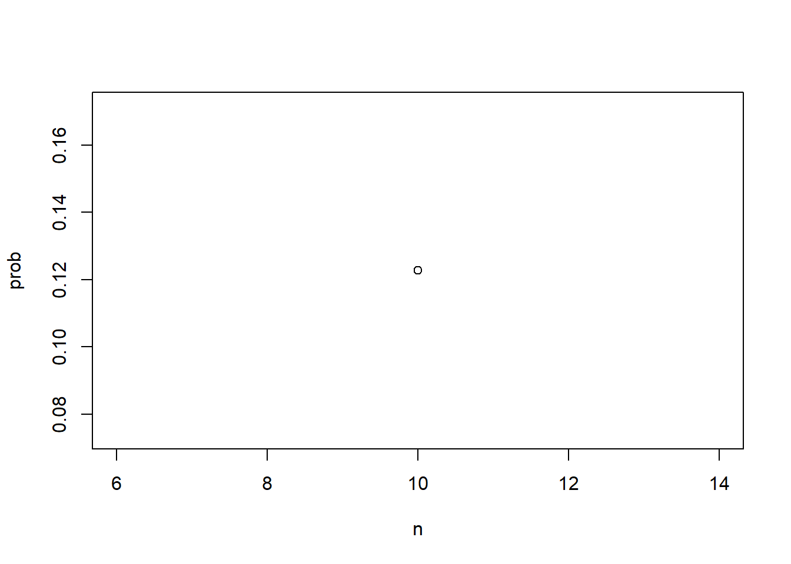
Мы назовем это вычислительной задачей и, по сути , произведем расчеты вероятности того, что у двух людей будет один и тот же день рождения. Для этого мы будем использовать небольшое моделирование
методом Монте-Карло.Теперь, когда мы это сделали, мы хотим вычислить эту функцию, мы хотим применить эту функцию к нескольким значениям
n, скажем, от 1 до 60. Давайте определимnкак последовательность, начинающуюся с1и заканчивающуюся на60. Теперь мы можем использовать циклfor, чтобы применить эту функцию к каждому значению вn, но оказывается, что циклыforредко являются предпочтительным подходом в R. В общем, мы стараемся выполнять операции над целыми векторами. Арифметические операции, например, оперируют с векторами поэлементно. Мы увидели это, когда узнали о R. Итак, если мы введемxравным от 1 до 10, теперь X - это вектор, начинающийся с 1 и заканчивающийся на 10, и мы вычислим квадратный корень изx, то на самом деле это вычисляет квадратный корень для каждого элемента. Точно так же, если мы определимyравным от 1 до 10, а затем умножим x на y, это умножит каждый элемент 1 на 1– 1 умножить на 1, 2 умножить на 2 и так далее. Так что на самом деле нет необходимости в циклахfor.Но не все функции работают таким образом. Вы не можете просто отправить вектор в любую функцию в R. Например, функция, которую мы только что написали, не работает поэлементно , поскольку она ожидает скаляр, она ожидает
n. Этот фрагмент кода делает не то, что мы хотим. Если мы введемcompute probи отправим ему векторn, мы не получим то, что хотим. Мы получим только одно число. Что мы можем сделать вместо этого, так это использовать функциюsapply (), которая позволяет нам выполнять поэлементные операции с любой функцией.Вот как это работает. Мы определим простой пример для вектора с 1 по 10. Если мы хотим применить квадратные корни из каждого элемента
x, мы можем просто ввестиsapply xчерез запятую квадратный корень, и он применит квадратный корень к каждому элементуx. Конечно, нам не нужно этого делать, потому что квадратный корень уже делает это, но мы используем его в качестве простого примера.Итак, в нашем случае мы можем просто ввести
probравноsapply n- n - это наш вектор - и затем функция, которую мы определяем, вычисляетprob. И это присвоит каждому элементуprobвероятность того, что у двух людей будет одинаковый день рождения для этогоn. И теперь мы можем очень быстро составить сюжет.Code: Computing birthday problem probabilities with sapply
n <- seq(1, 60)
# function for computing exact probability of shared birthdays for any n
exact_prob <- function(n){
prob_unique <- seq(365, 365-n+1)/365 # вектор дробей для mult. правила
1 - prod(prob_unique) # вычисление вероятности отсутствия общих дней рождения и вычитание из 1
}
# applying function element-wise to vector of n values
eprob <- sapply(n, exact_prob)
prob <- sapply(n, compute_prob) # element-wise application of compute_prob to n
plot(n, prob)
# plotting Monte Carlo results and exact probabilities on same graph
plot(n, prob) # plot Monte Carlo results
lines(n, eprob, col = "red") # add line for exact prob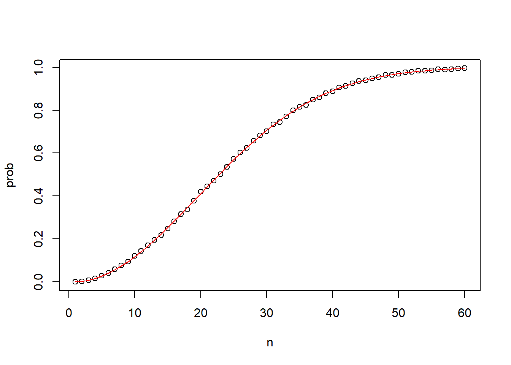
Мы строим график вероятности того, что у двух человек будет одинаковый день рождения , в зависимости от размера группы.
Теперь давайте вычислим точные вероятности , а не будем использовать моделирование методом Монте-Карло. Функция, которую мы только что определили, использует моделирование методом Монте-Карло, но мы можем использовать то, что мы узнали о теории вероятностей , для вычисления точного значения. Мы не только получаем точный ответ с помощью математики, но и выполняем вычисления намного быстрее, поскольку мы не нужно проводить эксперименты. Мы просто получаем номер. Чтобы упростить математику для этой конкретной задачи, вместо вычисления вероятности того, что это произойдет, мы вычислим вероятность того, что этого не произойдет, и затем мы можем использовать правило умножения.
Давайте начнем с первого лица. Вероятность того, что у человека 1 уникальный день рождения, конечно, равна 1. Все в порядке. Теперь давайте перейдем ко второму вопросу. Вероятность того, что у второго человека уникальный день рождения, учитывая, что у человека 1 уже был один из дней , равна 364, деленному на 365. Тогда для человека 3, учитывая, что у первых двух человек уже есть уникальные дни рождения, остается 363. Итак, теперь эта вероятность равна 363, деленным на 365. Если мы продолжим в том же духе и найдем вероятность того, что у всех, скажем, 50 человек будут уникальные дни рождения, мы умножим 1 на 364, разделенное на 365, умножим 363, разделенное на 365, точка-точка -точка, вплоть до 50-го элемента. Вот уравнение.
Теперь мы можем легко написать функцию, которая делает это. На этот раз мы назовем это точной проблемой. Он принимает n в качестве аргумента и вычисляет эту вероятность, используя этот простой код. Теперь мы можем вычислить каждую вероятность для каждого n, снова используя
sapply, вот так. И если мы построим график, то увидим, что расчеты по методу Монте-Карло были почти точными. Они были почти точным приближением к фактическому значению.Теперь обратите внимание, что если бы не было возможности вычислить точные вероятности, что иногда случается, мы все равно смогли бы точно оценить вероятности с помощью метода Монте-Карло.
DataCamp Assessment: Combinations and Permutations
Exercise 2. Sampling with replacement
Допустим, вы вытащили 5 шаров из коробки a, в которой есть 3 голубых шара, 5 пурпурных шаров и 7 желтых шаров с заменой, и все они были желтыми.
Какова вероятность того, что следующий будет желтым?
УведомлениеInstruction
- Присвойте переменной p_yellow значение вероятности выбора желтого шара при первом розыгрыше.
- Используя переменную p_yellow, вычислите вероятность выбора желтого шара при шестом розыгрыше.
basket_draw6 <- c('yellow', 'yellow', 'cyan', 'cyan', 'cyan', 'magenta', 'magenta', 'magenta', 'magenta', 'magenta', 'magenta', 'magenta' )
basket_draw1 <- c('yellow', 'yellow', 'yellow', 'yellow', 'yellow','yellow', 'yellow','cyan', 'cyan', 'cyan', 'magenta', 'magenta', 'magenta', 'magenta', 'magenta', 'magenta', 'magenta' )B = 10000
simulation_1 <- function(){
sampling_1 <- sample(basket_draw1, 1, replace = TRUE)
sampling_1 == "yellow"
}
result_mc1 <- replicate(B, simulation_1())
mean(result_mc1)[1] 0.4167simulation_6 <- function(){
sampling_6 <- sample(basket_draw6, 1, replace = TRUE)
sampling_6 == "yellow"
}
result_mc6 <- replicate(B, simulation_6())
mean(result_mc6)[1] 0.1609Exercise 4. Probability the Celtics win a game
Две команды, скажем, “Селтикс” и “Барселона”, играют серию из семи игр. “Барселона” - лучшая команда, и у них 60% шансов на победу в каждой игре. Какова вероятность того, что “Селтикс” выиграют хотя бы одну игру? Помните, что “Селтикс” должны выиграть одну из первых четырех игр, иначе серия будет окончена!
УведомлениеInstruction
Рассчитайте вероятность того, что “Барселона” выиграют первые четыре матча серии.
Рассчитайте вероятность того, что “Селтикс” выиграют хотя бы одну игру в первых четырех матчах серии.
p_cavs_win4 <- 0.6^4
p_cavs_win4[1] 0.12961 - p_cavs_win4[1] 0.8704Exercise 5. Monte Carlo simulation for Celtics winning a game
Создайте симуляцию методом Монте-Карло, чтобы подтвердить свой ответ на предыдущую задачу, оценив, как часто “Селтикс” выигрывают по крайней мере в 1 из 4 игр. Используйте B <- 10000 симуляций.
Предоставленный пример кода имитирует одну серию из четырех случайных игр, simulated_games. Создайте симуляцию методом Монте-Карло, чтобы подтвердить свой ответ на предыдущую задачу, оценив, как часто “Селтикс” выигрывают по крайней мере в 1 из 4 игр. Используйте B <- 10000 симуляций.
Предоставленный пример кода имитирует одну серию из четырех случайных игр, simulated_games.
УведомлениеInstruction
Используйте функцию репликации для
B <- 10000симуляций серии из четырех игр.Результаты репликации должны быть сохранены в переменной с именем
celtic_wins.В рамках каждой симуляции скопируйте пример кода для имитации серии из четырех игр с именем
simulated_games.Затем используйте функцию
any, чтобы указать, содержит ли серия из четырех игр хотя бы одну победу “Селтикс”.Выполните эти операции в два отдельных этапа.
Используйте функцию
meanвceltic_wins, чтобы найти долю симуляций, которые содержат хотя бы одну победу “Селтикс” в четырех играх.
#|code-overflow: wrap
simulated_games <- sample(c("lose","win"), 4, replace = TRUE, prob = c(0.6, 0.4))
B <- 10000
# Create an object called `celtic_wins` that replicates two steps for B iterations: (1) generating a random four-game series `simulated_games` using the example code, then (2) determining whether the simulated series contains at least one win for the Celtics.
celtic_wins <- replicate(B, {
simulated_games <- sample(c("lose","win"), 4, replace = TRUE, prob = c(0.6, 0.4))
any(simulated_games=="win")
})
mean(celtic_wins)[1] 0.8687Построение графика (пример)
\(Y = 4845 * x^2 - 905.6 * x + 43.21\)
x <- 5:200
farmula_y <- function(x) {
y <- 4845 * x^2 - 905.6 * x + 43.21
y
}
y <- sapply(x, farmula_y)
plot(x,y)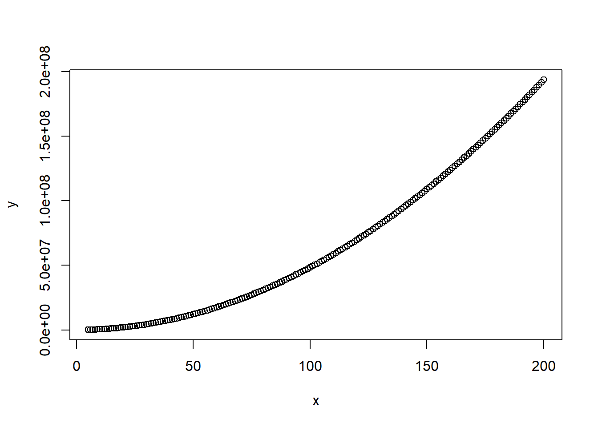
1.1.3 Addition Rule and Monty Hall
Под “facecard” профессор подразумевает карточку номиналом 10 (K, Q, J, 10).
Ключевые моменты
- Правило сложения гласит, что вероятность события \(A\) или события \(B\)равна вероятности события \(A\) плюс вероятность события \(B\) минус вероятность того, что оба события произойдут вместе.
\[ \mbox{Pr}(A \mbox{ or } B) = \mbox{Pr}(A) + \mbox{Pr}(B) - \mbox{Pr}(A \mbox{ and } B) \]
- Обратите внимание, что это эквивалентно .
Example: The addition rule for a natural 21 in blackjack
Мы применяем правило сложения, где \(A\) = вытягиваем туза, затем открытую карту и \(B\) = вытягиваем открытую карту, затем туза. Обратите внимание, что в этом случае оба события A и B не могут произойти одновременно, поэтому \(\mbox{Pr(A and B)} = 0\).
\[ \mbox{Pr(ace then facecard)} = \frac{4}{52} \times \frac{16}{51} \] \[ \mbox{Pr(facecard then ace)} = \frac{16}{52}\times\frac{4}{51} \] \[ \mbox{Pr(ace then facecard | facecard then ace)} = \frac{4}{52} \times \frac{16}{51} + \frac{16}{52} \times \frac{4}{51} = 0.0483 \] #### The Monty Hall Problem
РАФАЭЛЬ ИРИЗАРРИ: Мы собираемся рассмотреть последний пример из области дискретной вероятности.
Это проблема Монти Холла.
В 1970-х годах было игровое шоу под названием “Давайте заключим сделку”. Ведущим был Монти Холл. Вот откуда взялось название проблемы. В какой-то момент игры участникам было предложено выбрать одну из трех дверей. За одной дверью был приз. У двух других за спиной была коза. И это, по сути, означало, что вы проиграли. Монти Холл открывал одну из двух оставшихся дверей и показывал участнику, что за этой дверью нет приза. Итак, у вас остаются две двери - та, которую вы выбрали, и одна дверь, о которой вы не знаете, что за ней находится. Итак, Монти Холл спросил бы: “Ты хочешь поменять двери?” Что бы вы сделали?
Мы можем использовать вероятность, чтобы показать, что если вы придерживаетесь оригинальной двери, ваши шансы выиграть автомобиль или любой другой крупный приз равны 1 к 3. Но если вы переключитесь, ваши шансы удвоятся до 2 из 3. Это кажется нелогичным. Многие люди ошибочно полагают, что оба шанса равны 1 к 2, поскольку осталось всего две двери, и за одной из них находится приз.
Мы собираемся использовать моделирование методом Монте-Карло, чтобы показать вам, что это так. И это поможет вам понять, как все это работает. Обратите внимание, что код, который мы собираемся вам показать, длиннее, чем должен быть. Но мы используем это в качестве иллюстрации, чтобы помочь вам понять логику, стоящую за тем, что на самом деле здесь происходит. Итак, давайте начнем с создания симуляции, имитирующей стратегию прилипания к одной и той же двери. Давайте пройдемся по коду.
B <- 10000
stick <- replicate(B, {
doors <- as.character(1:3)
prize <- sample(c("car","goat","goat")) # puts prizes in random order
prize_door <- doors[prize == "car"] # note which door has prize
my_pick <- sample(doors, 1) # мы собираемся имитировать ваш выбор, выбрав случайную выборку из этих трех дверей.
show <- sample(doors[!doors %in% c(my_pick, prize_door)],1) # : оператор %in% используется для проверки наличия элементов одного вектора в другом. В данном случае создается логический вектор, показывающий, какие двери не были выбраны (my_pick) и за которыми нет приза (prize_door). Оператор ! (логическое отрицание) используется для инвертирования этого условия, так что в результате мы получаем вектор, состоящий из дверей, которые не были выбраны участником и не содержат приза.
stick <- my_pick # stick with original door
stick == prize_door # test whether the original door has the prize
})
mean(stick) # probability of choosing prize door when sticking[1] 0.3399Мы собираемся провести 10 000 экспериментов. Мы собираемся делать это снова и снова 10 000 раз. Первое, что мы делаем, - это присваиваем приз двери.
Итак, приз будет находиться в одной из трех дверей, которые мы создали. Тогда это будет в призовой двери. Призовая дверь содержит номер двери, за которой находится приз.
Затем мы собираемся имитировать ваш выбор, выбрав случайную выборку из этих трех дверей.
Теперь, на следующем шаге, мы собираемся решить, какую дверь вам покажут. Вам покажут - не вашу дверь и не дверь с призом. Вам покажут другую. Ты придерживаешься своей двери, вот чего ты придерживаешься, ничего не изменилось. Все, что мы сделали выше, не имеет значения , потому что вы стоите на своем. Итак, теперь мы повторяем это снова и снова, и в конце мы спрашиваем, та ли дверь, которую вы выбрали, та, к которой вы прилипли? Это и есть призовая дверь? Как часто это происходит? Мы знаем, что это будет третий, потому что ни одна из этих процедур ничего не изменила. Вы начали выбирать одну из трех, ничего не изменилось, и теперь вас спрашивают, та ли дверь, которую я выбрал? Если мы запустим симуляцию, то на самом деле увидим, как это происходит. Мы запустили его 10 000 раз, и вероятность выигрыша составила 0,3357, примерно 1 к 3.
Итак, приз будет находиться в одной из трех дверей, которые мы создали. Тогда это будет в призовой двери. Призовая дверь содержит номер двери, за которой находится приз.
Затем мы собираемся имитировать ваш выбор, выбрав случайную выборку из этих трех дверей.
Теперь, на следующем шаге, мы собираемся решить, какую дверь вам покажут. Вам покажут - не вашу дверь и не дверь с призом. Вам покажут другую. Ты придерживаешься своей двери, вот чего ты придерживаешься, ничего не изменилось. Все, что мы сделали выше, не имеет значения , потому что вы стоите на своем. Итак, теперь мы повторяем это снова и снова, и в конце мы спрашиваем, та ли дверь, которую вы выбрали, та, к которой вы прилипли? Это и есть призовая дверь? Как часто это происходит? Мы знаем, что это будет третий, потому что ни одна из этих процедур ничего не изменила. Вы начали выбирать одну из трех, ничего не изменилось, и теперь вас спрашивают, та ли дверь, которую я выбрал? Если мы запустим симуляцию, то на самом деле увидим, как это происходит. Мы запустили его 10 000 раз, и вероятность выигрыша составила 0,3357, примерно 1 к 3.
Code: Monte Carlo simulation of switch strategy
switch <- replicate(B, {
doors <- as.character(1:3)
prize <- sample(c("car","goat","goat")) # puts prizes in random order
prize_door <- doors[prize == "car"] # note which door has prize
my_pick <- sample(doors, 1) # note which door is chosen first
show <- sample(doors[!doors %in% c(my_pick, prize_door)], 1) # open door with no prize that isn't chosen
switch <- doors[!doors%in%c(my_pick, show)] # switch to the door that wasn't chosen first or opened
switch == prize_door # test whether the switched door has the prize
})
mean(switch) # probability of choosing prize door when switching[1] 0.6662Теперь давайте повторим упражнение, но рассмотрим стратегию переключения. Мы начинаем точно так же.
У нас есть три двери, мы случайным образом распределяем три приза.
Тогда мы узнаем, у кого из них главный приз - автомобиль, но не сообщаем об этом участнику. Таким образом, участник должен выбрать что-то одно.
По сути, это случайный выбор. Вот какой у меня выбор. А теперь мы собираемся показать участнику одну дверь. Это не может быть тот, кого они выбрали, и это не может быть тот, у кого машина. Итак, остается только одна дверь - дверь, за которой ничего нет за этим стояло то, что не было выбрано. Итак, теперь то, что ты собираешься сделать, - это переключиться. Вы собираетесь переключиться на дверь, которую они вам не показывали, потому что за той, которую они вам показали, ничего не было. Итак, по сути, происходит то, что вы переключаетесь с оригинала, у которого был шанс 1 из 3 стать тем самым, на любой другой вариант, у которого должен быть шанс 2 из 3. Итак, если мы запустим симуляцию, мы фактически подтвердим это. Мы получаем, что доля выигрышей составляет 0,6717, что составляет примерно 2/3. Оценка по методу Монте-Карло подтверждает два расчета из трех.
У нас есть три двери, мы случайным образом распределяем три приза.
Тогда мы узнаем, у кого из них главный приз - автомобиль, но не сообщаем об этом участнику. Таким образом, участник должен выбрать что-то одно.
По сути, это случайный выбор. Вот какой у меня выбор. А теперь мы собираемся показать участнику одну дверь. Это не может быть тот, кого они выбрали, и это не может быть тот, у кого машина. Итак, остается только одна дверь - дверь, за которой ничего нет за этим стояло то, что не было выбрано. Итак, теперь то, что ты собираешься сделать, - это переключиться. Вы собираетесь переключиться на дверь, которую они вам не показывали, потому что за той, которую они вам показали, ничего не было. Итак, по сути, происходит то, что вы переключаетесь с оригинала, у которого был шанс 1 из 3 стать тем самым, на любой другой вариант, у которого должен быть шанс 2 из 3. Итак, если мы запустим симуляцию, мы фактически подтвердим это. Мы получаем, что доля выигрышей составляет 0,6717, что составляет примерно 2/3. Оценка по методу Монте-Карло подтверждает два расчета из трех.
DataCamp Assessment: The Addition Rule and Monty Hall
Exercise 1. The Cavs and the Warriors
Две команды, скажем, “Caws” и “Warriors”, играют чемпионскую серию из семи игр. Тот, кто первым выиграет 4 матча, выигрывает серию. Команды одинаково хороши, поэтому у каждой из них есть шансы на победу 50 на 50 в каждой игре.
Если “Caws” проиграют первую игру, какова вероятность того, что они выиграют серию?
СоветInstructions
Присвоьте переменной
nколичество оставшихся игр.Назначьте переменную
outcomesв качестве вектора возможных исходов в одной игре, где 0 указывает на проигрыш, а 1 - на победу Cavs.Присвойте переменную l списку всех возможных исходов во всех оставшихся играх. Используйте функцию
repдля создания списка изnигр, где каждая игра состоит изlist(outcomes).Используйте функцию
expand.gridдля создания df, содержащего все комбинации возможных исходов оставшихся игр.Используйте функцию
rowSums, чтобы определить, какие комбинации игровых исходов приводят к тому, что Cavs выигрывают количество игр, необходимое для победы в серии.Используйте
mean, чтобы рассчитать долю исходов, которые приводят к победе Cavs в серии, и вывести свой ответ на консоль.
# Assign the number of remaining games to variable n
n <- 6
# Assign the variable outcomes as a vector of possible outcomes in one game
outcomes <- c(0, 1)
# Присвоить переменной l список всех возможных исходов во всех оставшихся играх
l <- rep(list(outcomes), times = n)
# Используйте expand.grid для создания фрейма данных, содержащего все комбинации возможных результатов
df <- expand.grid(l)
# Используйте суммы строк, чтобы определить, какие комбинации приводят к выигрышу Cavs необходимого количества игр
cavs_wins <- rowSums(df) >= (n/2 + 1) # Assuming the Cavs need to win more than half of the games to win the series
# Use mean to calculate the proportion of outcomes where the Cavs win the series
proportion_cavs_wins <- mean(cavs_wins)
# Print the result to the console
cat("Proportion of outcomes where Cavs win the series:", proportion_cavs_wins, "\n")Proportion of outcomes where Cavs win the series: 0.34375 Exercise 2. The Cavs and the Warriors - Monte Carlo
Подтвердите результаты предыдущего вопроса с помощью моделирования методом Монте-Карло, чтобы оценить вероятность победы Cavs в серии после поражения в первой игре.
Use the
replicatefunction to replicate the sample code forB <- 10000simulations.Используйте функцию
sampleдля моделирования серии из 6 игр со случайными независимыми исходами либо проигрыша Cavs (0), либо победы Cavs (1) в указанном порядке.Используйте вероятности по умолчанию для выборки.Используйте функцию
sum, чтобы определить, содержала ли смоделированная серия по крайней мере 4 победы Cavs.Используйте функцию “mean”, чтобы найти долю симуляций, в которых Cavs выигрывают по крайней мере в 4 из оставшихся игр.
B <- 10000
r <- replicate (B, {
results <- sample(c(0,1), 6, replace = TRUE)
sum(results) >= 4
})
mean(r)[1] 0.3461Exercise 3. A and B play a series - part 1
Две команды 🅰️ и 🅱️ играют в серии из 7 игр. Команда 🅰️ лучше команды 🅱️, и у нее есть шанс p > 0.5 выиграть каждую игру.
Используйте функцию
sapplyдля вычисления вероятности, назовите ее доказательством выигрыша приp <- seq(0.5, 0.95, 0.025).Затем постройте график результата (p, Pr).
p <- seq(0.5, 0.95, 0.025)
#Учитывая значение "p", вероятность победы в серии для команды-аутсайдера B может быть вычислена с помощью следующей функции, основанной на моделировании методом Монте-Карло:
prob_win <- function(p){
B <- 10000
result <- replicate(B, {
b_win <- sample(c(1,0), 7, replace = TRUE, prob = c(1-p, p))
sum(b_win)>=4
})
mean(result)
}
# Примените функцию 'prob_win' к вектору вероятностей победы команды A, чтобы определить вероятность победы команды B. Назовем этот объект "Pr".
Pr <- sapply(p, prob_win)
plot(p, Pr)
Exercise 4. A and B play a series - part 2
Повторите предыдущее упражнение, но теперь оставьте вероятность победы команды фиксированной на уровне p <- 0,75 и вычислите вероятность для разных длин серий. Например, выигрывает в лучшей из 1 игры, 3 игр, 5 игр и так далее в серии, которая длится 25 игр.
Используйте функцию seq для создания списка нечетных чисел в диапазоне от 1 до 25.
Используйте функцию sapply для вычисления вероятности, назовем ее Pr, выигрыша в сериях разной длины.
Затем постройте график результата (N, Pr).
N <- seq(1,25,1)
prob_win_ex4 <- function(N, p = 0.75) {
B <- 10000
result <- replicate(B, {
b_win <- sample(c(0,1), N, replace = TRUE, prob = c(1-p,p))
sum(b_win) >= (N+1)/2
})
mean(result)
}Assessment: Discrete Probability
library(gtools)
library(tidyverse)── Attaching core tidyverse packages ──────────────────────── tidyverse 2.0.0 ──
✔ dplyr 1.1.4 ✔ readr 2.1.5
✔ forcats 1.0.0 ✔ stringr 1.5.1
✔ ggplot2 3.5.1 ✔ tibble 3.2.1
✔ lubridate 1.9.4 ✔ tidyr 1.3.1
✔ purrr 1.0.4
── Conflicts ────────────────────────────────────────── tidyverse_conflicts() ──
✖ dplyr::filter() masks stats::filter()
✖ dplyr::lag() masks stats::lag()
ℹ Use the conflicted package (<http://conflicted.r-lib.org/>) to force all conflicts to become errorsQuestion 1: Olympic running
Совет
В финале Олимпийских игр в беге на 200 метров 8 бегунов соревнуются за 3 медали (порядок имеет значение). На Олимпийских играх 2012 года 3 из 8 бегунов были с Ямайки, а остальные 5 - из разных стран. Все три медали завоевала Ямайка (Усэйн Болт, Йохан Блейк и Уоррен Вейр).
Используйте приведенную выше информацию, чтобы помочь вам ответить на следующие четыре вопроса.
- Сколькими различными способами можно распределить 3 медали между 8 бегунами?
factorial(8)/factorial(8-3)[1] 336length(permutations(8, 3)[,1])[1] 336- Сколькими различными способами можно распределить три медали между тремя бегунами с Ямайки?
length(permutations(3,3)[,1])[1] 6- What is the probability that all 3 medals are won by Jamaica?
1/5*1/5*1/5[1] 0.008- Проведите моделирование методом Монте-Карло по этому вектору, представляющему страны 8 участников этой гонки:
runners <- c("Jamaica", "Jamaica", "Jamaica", "USA", "Ecuador", "Netherlands", "France", "South Africa")Для каждой итерации моделирования по методу Монте-Карло в цикле replicate() выберите 3 бегунов, представляющих 3 медалистов, и проверьте, все ли они с Ямайки. Повторите это моделирование 10 000 раз. Установите начальное значение равным 1 перед запуском цикла.
Рассчитайте вероятность того, что все бегуны родом с Ямайки.
set.seed(1)
B <- 10000
n <- 8
result <- replicate(B, {
res <- sample(runners, 3, replace = FALSE)
sum(res == "Jamaica") == 3
})
mean(result)[1] 0.0174Question 2: Restaurant management
Воспользуйтесь приведенной ниже информацией, чтобы ответить на следующие пять вопросов.
Менеджер ресторана хочет рекламировать, что его специальное предложение на обед предлагает достаточно вариантов, чтобы есть разные блюда каждый день в году. Он не думает, что его текущее фирменное блюдо действительно допускает такое количество вариантов, но хочет при необходимости изменить его, чтобы было как минимум 365 вариантов.
В меню ресторана входит 1 первое блюдо, 2 гарнира и 1 напиток. В настоящее время он предлагает на выбор 1 основное блюдо из списка из 6 вариантов, на выбор 2 разных гарнира из списка из 6 вариантов и на выбор 1 напиток из списка из 2 вариантов.
- Сколько комбинаций блюд возможно в текущем меню?
main <- c(1,2,3,4,5,6) # выбираем 1
sec <- c('a','b', 'c', 'd' , 'f', 'g') # нужно выбрать 2
juse <- c('lyme','apple') # выбираем 1
sec_combi <- combn(sec, 2, simplify = TRUE)
sec_combi <- apply(sec_combi, 2, paste, collapse = "") # объединяем строки вектора
expand.grid(main,sec_combi,juse) Var1 Var2 Var3
1 1 ab lyme
2 2 ab lyme
3 3 ab lyme
4 4 ab lyme
5 5 ab lyme
6 6 ab lyme
7 1 ac lyme
8 2 ac lyme
9 3 ac lyme
10 4 ac lyme
11 5 ac lyme
12 6 ac lyme
13 1 ad lyme
14 2 ad lyme
15 3 ad lyme
16 4 ad lyme
17 5 ad lyme
18 6 ad lyme
19 1 af lyme
20 2 af lyme
21 3 af lyme
22 4 af lyme
23 5 af lyme
24 6 af lyme
25 1 ag lyme
26 2 ag lyme
27 3 ag lyme
28 4 ag lyme
29 5 ag lyme
30 6 ag lyme
31 1 bc lyme
32 2 bc lyme
33 3 bc lyme
34 4 bc lyme
35 5 bc lyme
36 6 bc lyme
37 1 bd lyme
38 2 bd lyme
39 3 bd lyme
40 4 bd lyme
41 5 bd lyme
42 6 bd lyme
43 1 bf lyme
44 2 bf lyme
45 3 bf lyme
46 4 bf lyme
47 5 bf lyme
48 6 bf lyme
49 1 bg lyme
50 2 bg lyme
51 3 bg lyme
52 4 bg lyme
53 5 bg lyme
54 6 bg lyme
55 1 cd lyme
56 2 cd lyme
57 3 cd lyme
58 4 cd lyme
59 5 cd lyme
60 6 cd lyme
61 1 cf lyme
62 2 cf lyme
63 3 cf lyme
64 4 cf lyme
65 5 cf lyme
66 6 cf lyme
67 1 cg lyme
68 2 cg lyme
69 3 cg lyme
70 4 cg lyme
71 5 cg lyme
72 6 cg lyme
73 1 df lyme
74 2 df lyme
75 3 df lyme
76 4 df lyme
77 5 df lyme
78 6 df lyme
79 1 dg lyme
80 2 dg lyme
81 3 dg lyme
82 4 dg lyme
83 5 dg lyme
84 6 dg lyme
85 1 fg lyme
86 2 fg lyme
87 3 fg lyme
88 4 fg lyme
89 5 fg lyme
90 6 fg lyme
91 1 ab apple
92 2 ab apple
93 3 ab apple
94 4 ab apple
95 5 ab apple
96 6 ab apple
97 1 ac apple
98 2 ac apple
99 3 ac apple
100 4 ac apple
101 5 ac apple
102 6 ac apple
103 1 ad apple
104 2 ad apple
105 3 ad apple
106 4 ad apple
107 5 ad apple
108 6 ad apple
109 1 af apple
110 2 af apple
111 3 af apple
112 4 af apple
113 5 af apple
114 6 af apple
115 1 ag apple
116 2 ag apple
117 3 ag apple
118 4 ag apple
119 5 ag apple
120 6 ag apple
121 1 bc apple
122 2 bc apple
123 3 bc apple
124 4 bc apple
125 5 bc apple
126 6 bc apple
127 1 bd apple
128 2 bd apple
129 3 bd apple
130 4 bd apple
131 5 bd apple
132 6 bd apple
133 1 bf apple
134 2 bf apple
135 3 bf apple
136 4 bf apple
137 5 bf apple
138 6 bf apple
139 1 bg apple
140 2 bg apple
141 3 bg apple
142 4 bg apple
143 5 bg apple
144 6 bg apple
145 1 cd apple
146 2 cd apple
147 3 cd apple
148 4 cd apple
149 5 cd apple
150 6 cd apple
151 1 cf apple
152 2 cf apple
153 3 cf apple
154 4 cf apple
155 5 cf apple
156 6 cf apple
157 1 cg apple
158 2 cg apple
159 3 cg apple
160 4 cg apple
161 5 cg apple
162 6 cg apple
163 1 df apple
164 2 df apple
165 3 df apple
166 4 df apple
167 5 df apple
168 6 df apple
169 1 dg apple
170 2 dg apple
171 3 dg apple
172 4 dg apple
173 5 dg apple
174 6 dg apple
175 1 fg apple
176 2 fg apple
177 3 fg apple
178 4 fg apple
179 5 fg apple
180 6 fg apple- У менеджера есть еще один напиток, который он мог бы добавить в специальное предложение.
Сколько комбинаций возможно, если он расширит свое оригинальное специальное предложение до 3 вариантов напитков?
main <- c(1,2,3,4,5,6) # выбираем 1
sec <- c('a','b', 'c', 'd' , 'f', 'g') # нужно выбрать 2
juse <- c('lyme','apple', 'banana') # выбираем 1
sec_combi <- combn(sec, 2, simplify = TRUE)
sec_combi <- apply(sec_combi, 2, paste, collapse = "") # объединяем строки вектора
expand.grid(main,sec_combi,juse) Var1 Var2 Var3
1 1 ab lyme
2 2 ab lyme
3 3 ab lyme
4 4 ab lyme
5 5 ab lyme
6 6 ab lyme
7 1 ac lyme
8 2 ac lyme
9 3 ac lyme
10 4 ac lyme
11 5 ac lyme
12 6 ac lyme
13 1 ad lyme
14 2 ad lyme
15 3 ad lyme
16 4 ad lyme
17 5 ad lyme
18 6 ad lyme
19 1 af lyme
20 2 af lyme
21 3 af lyme
22 4 af lyme
23 5 af lyme
24 6 af lyme
25 1 ag lyme
26 2 ag lyme
27 3 ag lyme
28 4 ag lyme
29 5 ag lyme
30 6 ag lyme
31 1 bc lyme
32 2 bc lyme
33 3 bc lyme
34 4 bc lyme
35 5 bc lyme
36 6 bc lyme
37 1 bd lyme
38 2 bd lyme
39 3 bd lyme
40 4 bd lyme
41 5 bd lyme
42 6 bd lyme
43 1 bf lyme
44 2 bf lyme
45 3 bf lyme
46 4 bf lyme
47 5 bf lyme
48 6 bf lyme
49 1 bg lyme
50 2 bg lyme
51 3 bg lyme
52 4 bg lyme
53 5 bg lyme
54 6 bg lyme
55 1 cd lyme
56 2 cd lyme
57 3 cd lyme
58 4 cd lyme
59 5 cd lyme
60 6 cd lyme
61 1 cf lyme
62 2 cf lyme
63 3 cf lyme
64 4 cf lyme
65 5 cf lyme
66 6 cf lyme
67 1 cg lyme
68 2 cg lyme
69 3 cg lyme
70 4 cg lyme
71 5 cg lyme
72 6 cg lyme
73 1 df lyme
74 2 df lyme
75 3 df lyme
76 4 df lyme
77 5 df lyme
78 6 df lyme
79 1 dg lyme
80 2 dg lyme
81 3 dg lyme
82 4 dg lyme
83 5 dg lyme
84 6 dg lyme
85 1 fg lyme
86 2 fg lyme
87 3 fg lyme
88 4 fg lyme
89 5 fg lyme
90 6 fg lyme
91 1 ab apple
92 2 ab apple
93 3 ab apple
94 4 ab apple
95 5 ab apple
96 6 ab apple
97 1 ac apple
98 2 ac apple
99 3 ac apple
100 4 ac apple
101 5 ac apple
102 6 ac apple
103 1 ad apple
104 2 ad apple
105 3 ad apple
106 4 ad apple
107 5 ad apple
108 6 ad apple
109 1 af apple
110 2 af apple
111 3 af apple
112 4 af apple
113 5 af apple
114 6 af apple
115 1 ag apple
116 2 ag apple
117 3 ag apple
118 4 ag apple
119 5 ag apple
120 6 ag apple
121 1 bc apple
122 2 bc apple
123 3 bc apple
124 4 bc apple
125 5 bc apple
126 6 bc apple
127 1 bd apple
128 2 bd apple
129 3 bd apple
130 4 bd apple
131 5 bd apple
132 6 bd apple
133 1 bf apple
134 2 bf apple
135 3 bf apple
136 4 bf apple
137 5 bf apple
138 6 bf apple
139 1 bg apple
140 2 bg apple
141 3 bg apple
142 4 bg apple
143 5 bg apple
144 6 bg apple
145 1 cd apple
146 2 cd apple
147 3 cd apple
148 4 cd apple
149 5 cd apple
150 6 cd apple
151 1 cf apple
152 2 cf apple
153 3 cf apple
154 4 cf apple
155 5 cf apple
156 6 cf apple
157 1 cg apple
158 2 cg apple
159 3 cg apple
160 4 cg apple
161 5 cg apple
162 6 cg apple
163 1 df apple
164 2 df apple
165 3 df apple
166 4 df apple
167 5 df apple
168 6 df apple
169 1 dg apple
170 2 dg apple
171 3 dg apple
172 4 dg apple
173 5 dg apple
174 6 dg apple
175 1 fg apple
176 2 fg apple
177 3 fg apple
178 4 fg apple
179 5 fg apple
180 6 fg apple
181 1 ab banana
182 2 ab banana
183 3 ab banana
184 4 ab banana
185 5 ab banana
186 6 ab banana
187 1 ac banana
188 2 ac banana
189 3 ac banana
190 4 ac banana
191 5 ac banana
192 6 ac banana
193 1 ad banana
194 2 ad banana
195 3 ad banana
196 4 ad banana
197 5 ad banana
198 6 ad banana
199 1 af banana
200 2 af banana
201 3 af banana
202 4 af banana
203 5 af banana
204 6 af banana
205 1 ag banana
206 2 ag banana
207 3 ag banana
208 4 ag banana
209 5 ag banana
210 6 ag banana
211 1 bc banana
212 2 bc banana
213 3 bc banana
214 4 bc banana
215 5 bc banana
216 6 bc banana
217 1 bd banana
218 2 bd banana
219 3 bd banana
220 4 bd banana
221 5 bd banana
222 6 bd banana
223 1 bf banana
224 2 bf banana
225 3 bf banana
226 4 bf banana
227 5 bf banana
228 6 bf banana
229 1 bg banana
230 2 bg banana
231 3 bg banana
232 4 bg banana
233 5 bg banana
234 6 bg banana
235 1 cd banana
236 2 cd banana
237 3 cd banana
238 4 cd banana
239 5 cd banana
240 6 cd banana
241 1 cf banana
242 2 cf banana
243 3 cf banana
244 4 cf banana
245 5 cf banana
246 6 cf banana
247 1 cg banana
248 2 cg banana
249 3 cg banana
250 4 cg banana
251 5 cg banana
252 6 cg banana
253 1 df banana
254 2 df banana
255 3 df banana
256 4 df banana
257 5 df banana
258 6 df banana
259 1 dg banana
260 2 dg banana
261 3 dg banana
262 4 dg banana
263 5 dg banana
264 6 dg banana
265 1 fg banana
266 2 fg banana
267 3 fg banana
268 4 fg banana
269 5 fg banana
270 6 fg banana- Менеджер решает добавить третий напиток, но ему необходимо расширить количество вариантов. Менеджер предпочел бы больше не менять свое меню и хочет знать, сможет ли он достичь своей цели, позволив клиентам выбирать больше гарниров.
Сколько существует комбинаций блюд, если клиенты могут выбрать из 6 основных блюд, 3 напитков и 3 гарнира из имеющихся 6 вариантов?
main <- c(1,2,3,4,5,6) # выбираем 1
sec <- c('a','b', 'c', 'd' , 'f', 'g') # нужно выбрать 2
juse <- c('lyme','apple', 'banana') # выбираем 1
sec_combi <- combn(sec, 3, simplify = TRUE)
sec_combi <- apply(sec_combi, 2, paste, collapse = "") # объединяем строки вектора
expand.grid(main,sec_combi,juse) Var1 Var2 Var3
1 1 abc lyme
2 2 abc lyme
3 3 abc lyme
4 4 abc lyme
5 5 abc lyme
6 6 abc lyme
7 1 abd lyme
8 2 abd lyme
9 3 abd lyme
10 4 abd lyme
11 5 abd lyme
12 6 abd lyme
13 1 abf lyme
14 2 abf lyme
15 3 abf lyme
16 4 abf lyme
17 5 abf lyme
18 6 abf lyme
19 1 abg lyme
20 2 abg lyme
21 3 abg lyme
22 4 abg lyme
23 5 abg lyme
24 6 abg lyme
25 1 acd lyme
26 2 acd lyme
27 3 acd lyme
28 4 acd lyme
29 5 acd lyme
30 6 acd lyme
31 1 acf lyme
32 2 acf lyme
33 3 acf lyme
34 4 acf lyme
35 5 acf lyme
36 6 acf lyme
37 1 acg lyme
38 2 acg lyme
39 3 acg lyme
40 4 acg lyme
41 5 acg lyme
42 6 acg lyme
43 1 adf lyme
44 2 adf lyme
45 3 adf lyme
46 4 adf lyme
47 5 adf lyme
48 6 adf lyme
49 1 adg lyme
50 2 adg lyme
51 3 adg lyme
52 4 adg lyme
53 5 adg lyme
54 6 adg lyme
55 1 afg lyme
56 2 afg lyme
57 3 afg lyme
58 4 afg lyme
59 5 afg lyme
60 6 afg lyme
61 1 bcd lyme
62 2 bcd lyme
63 3 bcd lyme
64 4 bcd lyme
65 5 bcd lyme
66 6 bcd lyme
67 1 bcf lyme
68 2 bcf lyme
69 3 bcf lyme
70 4 bcf lyme
71 5 bcf lyme
72 6 bcf lyme
73 1 bcg lyme
74 2 bcg lyme
75 3 bcg lyme
76 4 bcg lyme
77 5 bcg lyme
78 6 bcg lyme
79 1 bdf lyme
80 2 bdf lyme
81 3 bdf lyme
82 4 bdf lyme
83 5 bdf lyme
84 6 bdf lyme
85 1 bdg lyme
86 2 bdg lyme
87 3 bdg lyme
88 4 bdg lyme
89 5 bdg lyme
90 6 bdg lyme
91 1 bfg lyme
92 2 bfg lyme
93 3 bfg lyme
94 4 bfg lyme
95 5 bfg lyme
96 6 bfg lyme
97 1 cdf lyme
98 2 cdf lyme
99 3 cdf lyme
100 4 cdf lyme
101 5 cdf lyme
102 6 cdf lyme
103 1 cdg lyme
104 2 cdg lyme
105 3 cdg lyme
106 4 cdg lyme
107 5 cdg lyme
108 6 cdg lyme
109 1 cfg lyme
110 2 cfg lyme
111 3 cfg lyme
112 4 cfg lyme
113 5 cfg lyme
114 6 cfg lyme
115 1 dfg lyme
116 2 dfg lyme
117 3 dfg lyme
118 4 dfg lyme
119 5 dfg lyme
120 6 dfg lyme
121 1 abc apple
122 2 abc apple
123 3 abc apple
124 4 abc apple
125 5 abc apple
126 6 abc apple
127 1 abd apple
128 2 abd apple
129 3 abd apple
130 4 abd apple
131 5 abd apple
132 6 abd apple
133 1 abf apple
134 2 abf apple
135 3 abf apple
136 4 abf apple
137 5 abf apple
138 6 abf apple
139 1 abg apple
140 2 abg apple
141 3 abg apple
142 4 abg apple
143 5 abg apple
144 6 abg apple
145 1 acd apple
146 2 acd apple
147 3 acd apple
148 4 acd apple
149 5 acd apple
150 6 acd apple
151 1 acf apple
152 2 acf apple
153 3 acf apple
154 4 acf apple
155 5 acf apple
156 6 acf apple
157 1 acg apple
158 2 acg apple
159 3 acg apple
160 4 acg apple
161 5 acg apple
162 6 acg apple
163 1 adf apple
164 2 adf apple
165 3 adf apple
166 4 adf apple
167 5 adf apple
168 6 adf apple
169 1 adg apple
170 2 adg apple
171 3 adg apple
172 4 adg apple
173 5 adg apple
174 6 adg apple
175 1 afg apple
176 2 afg apple
177 3 afg apple
178 4 afg apple
179 5 afg apple
180 6 afg apple
181 1 bcd apple
182 2 bcd apple
183 3 bcd apple
184 4 bcd apple
185 5 bcd apple
186 6 bcd apple
187 1 bcf apple
188 2 bcf apple
189 3 bcf apple
190 4 bcf apple
191 5 bcf apple
192 6 bcf apple
193 1 bcg apple
194 2 bcg apple
195 3 bcg apple
196 4 bcg apple
197 5 bcg apple
198 6 bcg apple
199 1 bdf apple
200 2 bdf apple
201 3 bdf apple
202 4 bdf apple
203 5 bdf apple
204 6 bdf apple
205 1 bdg apple
206 2 bdg apple
207 3 bdg apple
208 4 bdg apple
209 5 bdg apple
210 6 bdg apple
211 1 bfg apple
212 2 bfg apple
213 3 bfg apple
214 4 bfg apple
215 5 bfg apple
216 6 bfg apple
217 1 cdf apple
218 2 cdf apple
219 3 cdf apple
220 4 cdf apple
221 5 cdf apple
222 6 cdf apple
223 1 cdg apple
224 2 cdg apple
225 3 cdg apple
226 4 cdg apple
227 5 cdg apple
228 6 cdg apple
229 1 cfg apple
230 2 cfg apple
231 3 cfg apple
232 4 cfg apple
233 5 cfg apple
234 6 cfg apple
235 1 dfg apple
236 2 dfg apple
237 3 dfg apple
238 4 dfg apple
239 5 dfg apple
240 6 dfg apple
241 1 abc banana
242 2 abc banana
243 3 abc banana
244 4 abc banana
245 5 abc banana
246 6 abc banana
247 1 abd banana
248 2 abd banana
249 3 abd banana
250 4 abd banana
251 5 abd banana
252 6 abd banana
253 1 abf banana
254 2 abf banana
255 3 abf banana
256 4 abf banana
257 5 abf banana
258 6 abf banana
259 1 abg banana
260 2 abg banana
261 3 abg banana
262 4 abg banana
263 5 abg banana
264 6 abg banana
265 1 acd banana
266 2 acd banana
267 3 acd banana
268 4 acd banana
269 5 acd banana
270 6 acd banana
271 1 acf banana
272 2 acf banana
273 3 acf banana
274 4 acf banana
275 5 acf banana
276 6 acf banana
277 1 acg banana
278 2 acg banana
279 3 acg banana
280 4 acg banana
281 5 acg banana
282 6 acg banana
283 1 adf banana
284 2 adf banana
285 3 adf banana
286 4 adf banana
287 5 adf banana
288 6 adf banana
289 1 adg banana
290 2 adg banana
291 3 adg banana
292 4 adg banana
293 5 adg banana
294 6 adg banana
295 1 afg banana
296 2 afg banana
297 3 afg banana
298 4 afg banana
299 5 afg banana
300 6 afg banana
301 1 bcd banana
302 2 bcd banana
303 3 bcd banana
304 4 bcd banana
305 5 bcd banana
306 6 bcd banana
307 1 bcf banana
308 2 bcf banana
309 3 bcf banana
310 4 bcf banana
311 5 bcf banana
312 6 bcf banana
313 1 bcg banana
314 2 bcg banana
315 3 bcg banana
316 4 bcg banana
317 5 bcg banana
318 6 bcg banana
319 1 bdf banana
320 2 bdf banana
321 3 bdf banana
322 4 bdf banana
323 5 bdf banana
324 6 bdf banana
325 1 bdg banana
326 2 bdg banana
327 3 bdg banana
328 4 bdg banana
329 5 bdg banana
330 6 bdg banana
331 1 bfg banana
332 2 bfg banana
333 3 bfg banana
334 4 bfg banana
335 5 bfg banana
336 6 bfg banana
337 1 cdf banana
338 2 cdf banana
339 3 cdf banana
340 4 cdf banana
341 5 cdf banana
342 6 cdf banana
343 1 cdg banana
344 2 cdg banana
345 3 cdg banana
346 4 cdg banana
347 5 cdg banana
348 6 cdg banana
349 1 cfg banana
350 2 cfg banana
351 3 cfg banana
352 4 cfg banana
353 5 cfg banana
354 6 cfg banana
355 1 dfg banana
356 2 dfg banana
357 3 dfg banana
358 4 dfg banana
359 5 dfg banana
360 6 dfg banana- Менеджер обеспокоен тем, что клиенты могут не захотеть подавать блюдо с 3 гарнирами. Вместо этого он готов увеличить количество вариантов первых блюд, но если он добавит слишком много дорогих вариантов, это может сказаться на прибыли. Он хочет знать, сколько вариантов первых блюд ему придется предложить, чтобы достичь своей цели.
Напишите функцию, которая принимает несколько вариантов первых блюд и возвращает количество возможных комбинаций блюд, учитывая это количество вариантов вторых блюд, 3 варианта напитков и выбор 2 гарниров из 6 вариантов.
Используйте sapply(), чтобы применить функцию к количеству опций entree в диапазоне от 1 до 12.
Какое минимальное количество вариантов основного блюда требуется для того, чтобы сгенерировать более 365 комбинаций?
library(tidyverse)
entree_choices <- function(x){
x * nrow(combinations(6,2)) * 3
}
combos <- sapply(1:12, entree_choices)
data.frame(entrees = 1:12, combos = combos) %>%
filter(combos > 365) %>%
min(.$entrees)[1] 9- Менеджер не уверен, что может позволить себе включить в обеденное меню такое количество блюд, и считает, что для него было бы дешевле увеличить количество гарниров. Он хочет знать, сколько гарниров ему придется предложить, чтобы достичь своей цели - не менее 365 комбинаций.
Напишите функцию, которая принимает несколько вариантов гарниров и возвращает количество возможных комбинаций блюд, учитывая 6 вариантов основных блюд, 3 варианта напитков и выбор 2 гарниров из указанного количества вариантов гарниров.
Используйте sapply(), чтобы применить функцию к количеству сторон в диапазоне от 2 до 12.
Какое минимальное количество дополнительных опций требуется для того, чтобы сгенерировать более 365 комбинаций?
side_choices <- function(x){
6 * nrow(combinations(x, 2)) * 3
}
combos <- sapply(2:12, side_choices)
data.frame(sides = 2:12, combos = combos) %>%
filter(combos > 365) %>%
min(.$sides)[1] 7Questions 3 and 4: Esophageal cancer and alcohol/tobacco use, part 1
Исследования “Случай-контроль” помогают определить, связаны ли определенные воздействия с такими исходами, как развитие рака. Встроенный набор данных esoph содержит данные исследования “случай-контроль” во Франции, в котором сравнивались люди с раком пищевода (случаи, подсчитанные в ncases) и люди без рака пищевода (контрольные, подсчитанные в ncontrols), которые тщательно сопоставлялись по целому ряду демографических и медицинских характеристик. В исследовании сравнивается потребление алкоголя в граммах в день (alcgp) и потребление табака в граммах в день (bgp) в разных случаях и контрольной группе, сгруппированных по возрастному диапазону (agegp).
Набор данных доступен в base R и может быть вызван с именем переменной esoph:
head(esoph) agegp alcgp tobgp ncases ncontrols
1 25-34 0-39g/day 0-9g/day 0 40
2 25-34 0-39g/day 10-19 0 10
3 25-34 0-39g/day 20-29 0 6
4 25-34 0-39g/day 30+ 0 5
5 25-34 40-79 0-9g/day 0 27
6 25-34 40-79 10-19 0 7Вы будете использовать этот набор данных для ответов на следующие четыре вопроса, состоящих из нескольких частей (вопросы 3-6).
Возможно, вы захотите использовать пакет tidyverse:
library(tidyverse)В следующих трех частях вы изучите некоторые основные характеристики набора данных.
Каждая строка содержит одну группу участников эксперимента. Каждая группа имеет различное сочетание возраста, потребления алкоголя и табака. Для каждой группы приводятся данные о количестве случаев рака и количестве контрольных групп (лиц без рака).
- Сколько групп участвует в исследовании?
nrow(esoph)[1] 88- Сколько всего случаев?
sum(esoph$ncases)[1] 200- How many controls are there?
sum(esoph$ncontrols)[1] 775В следующих четырех частях вам предлагается изучить некоторые вероятности в рамках этого набора данных, связанные с потреблением алкоголя и табака.
- Какова вероятность того, что субъект из группы с самым высоким уровнем потребления алкоголя болен раком?
alco <- esoph |>
filter(alcgp == max(alcgp))
sum(alco$ncases)/(sum(alco$ncontrols)+sum(alco$ncases))[1] 0.6716418Какова вероятность того, что субъект из группы с самым низким потреблением алкоголя болен раком?
alcolow <- esoph |>
filter(alcgp == min(alcgp))
sum(alcolow$ncases)/(sum(alcolow$ncontrols)+sum(alcolow$ncases))[1] 0.06987952Учитывая, что человек является больным, какова вероятность того, что он выкуривает 10 г или более в день?
smoke <- esoph |>
filter(tobgp != "0-9g/day")
sum(smoke$ncases)/sum(esoph$ncases)[1] 0.61- Учитывая, что человек является контрольным, какова вероятность того, что он выкуривает 10 г или более в день?
sum(smoke$ncontrols)/sum(esoph$ncontrols)[1] 0.4232258Questions 5 and 6: Esophageal cancer and alcohol/tobacco use, part 2
В следующих четырех частях рассматриваются вероятности, связанные с потреблением алкоголя и табака в этих случаях.
- Что касается случаев, какова вероятность попадания в группу с самым высоким содержанием алкоголя?
alcomax <- esoph |>
filter(alcgp == max(alcgp))
sum(alcomax$ncases)/sum(esoph$ncases)[1] 0.225- Что касается случаев, какова вероятность попадания в группу с самым высоким содержанием табака?
smoke_max <- esoph |>
filter(tobgp == "30+")
sum(smoke_max$ncases)/sum(esoph$ncases)[1] 0.155- Что касается случаев, какова вероятность попадания в группу с самым высоким содержанием алкоголя и табака?
esoph |>
filter(tobgp == "30+" & alcgp == max(alcgp)) |>
summarise(count = sum(ncases) / sum(esoph$ncases)) count
1 0.05- Что касается случаев, какова вероятность попадания в группу с самым высоким содержанием алкоголя или табака?
esoph |>
filter(tobgp == "30+" | alcgp == max(alcgp)) |>
summarise(count = sum(ncases) / sum(esoph$ncases)) count
1 0.33В следующих шести частях рассматриваются вероятности, связанные с потреблением алкоголя и табака среди контрольных групп, а также сравниваются случаи и контрольные группы.
- Что касается контроля, какова вероятность попадания в группу с самым высоким содержанием алкоголя?
esoph |>
filter(alcgp == max(alcgp)) |>
summarise(control = sum(ncontrols) / sum(esoph$ncontrols)) control
1 0.0283871- Во сколько раз вероятность того, что больные окажутся в группе с самым высоким содержанием алкоголя, выше, чем в контрольной группе?
all_cont <- sum(esoph$ncontrols)
a <- esoph |>
filter(alcgp == max(alcgp)) |>
summarise(sum(ncases) / sum(esoph$ncases))
n <- esoph |>
filter(alcgp == max(alcgp)) |>
summarise(control = sum(ncontrols) / sum(esoph$ncontrols))
a/n sum(ncases)/sum(esoph$ncases)
1 7.926136- Что касается контроля, какова вероятность попадания в группу с самым высоким содержанием табака?
esoph |>
filter(tobgp == "30+") |>
summarise(sum(ncontrols)/sum(esoph$ncontrols)) sum(ncontrols)/sum(esoph$ncontrols)
1 0.06580645- Что касается контроля, какова вероятность попадания в группу с самым высоким содержанием алкоголя и табака?
esoph |>
filter(tobgp == "30+" & alcgp == max(alcgp)) |>
summarise(sum(ncontrols)/sum(esoph$ncontrols)) sum(ncontrols)/sum(esoph$ncontrols)
1 0.003870968- Что касается контроля, какова вероятность оказаться в группе с самым высоким содержанием алкоголя или табака?
esoph |>
filter(tobgp == "30+" | alcgp == max(alcgp)) |>
summarise(sum(ncontrols)/sum(esoph$ncontrols)) sum(ncontrols)/sum(esoph$ncontrols)
1 0.09032258- Во сколько раз вероятность того, что заболевшие окажутся в группе с самым высоким содержанием алкоголя или табака, выше, чем в контрольной группе?
c <- esoph |>
filter(tobgp == "30+" | alcgp == max(alcgp)) |>
summarise(sum(ncases)/sum(esoph$ncases))
n <- esoph |>
filter(tobgp == "30+" | alcgp == max(alcgp)) |>
summarise(sum(ncontrols)/sum(esoph$ncontrols))
c/n sum(ncases)/sum(esoph$ncases)
1 3.653571Section 2 Overview
Раздел 2 знакомит вас с непрерывной вероятностью.
После завершения раздела 2 вы:
поймете различия между вычислением вероятностей для дискретных и непрерывных данных.
сможете использовать функции кумулятивного распределения для присвоения вероятностей интервалам при работе с непрерывными данными.
научитесь использовать R для генерации нормально распределенных результатов для использования в моделировании методом Монте-Карло.
узнаете некоторые полезные теоретические непрерывные распределения в дополнение к нормальному распределению, такие как t Стьюдента, хи-квадрат, экспоненциальное, гамма-, бета- и бета-биномиальное распределения.
В конце раздела 3 приведено 1 задание, в котором используется платформа DataCamp для отработки навыков программирования, а также набор вопросов на платформе edX.
Ключевые моменты
pnorm(a, avg, s) дает значение кумулятивной функции распределения для нормального распределения, определяемого средним значением avg и стандартным отклонением s.
Мы говорим, что случайная величина нормально распределена со средним значением и стандартными отклонениями, если аппроксимация pnorm(a, avg, s) выполняется для всех значений a.
Если мы хотим использовать нормальное приближение для высоты, мы можем оценить распределение просто по среднему значению и стандартному отклонению наших значений.
Если мы будем рассматривать данные о высоте как дискретные, а не категориальные, мы увидим, что данные не очень полезны, поскольку целочисленные значения встречаются чаще, чем ожидалось, из-за округления. Это называется дискретизацией.
При округленных данных нормальная аппроксимация особенно полезна при вычислении вероятностей интервалов длиной 1, которые включают ровно одно целое число.
Код:
Использование pnorm() для вычисления вероятностей :
library(tidyverse)
library(dslabs)
data(heights)
x <- heights |> filter(sex=="Male") |> pull(height)Мы можем оценить вероятность того, что мужчина выше 70,5 дюймов, используя:
1 - pnorm(70.5, mean(x), sd(x))[1] 0.371369Code: Discretization and the normal approximation
# plot distribution of exact heights in data
plot(prop.table(table(x)), xlab = "a = Height in inches", ylab = "Pr(x = a)")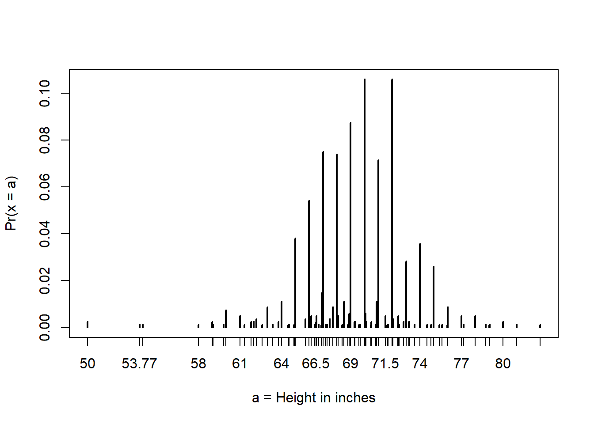
# probabilities in actual data over length 1 ranges containing an integer
mean(x <= 68.5) - mean(x <= 67.5)[1] 0.114532mean(x <= 69.5) - mean(x <= 68.5)[1] 0.1194581mean(x <= 70.5) - mean(x <= 69.5)[1] 0.1219212# probabilities in normal approximation match well
pnorm(68.5, mean(x), sd(x)) - pnorm(67.5, mean(x), sd(x))[1] 0.1031077pnorm(69.5, mean(x), sd(x)) - pnorm(68.5, mean(x), sd(x))[1] 0.1097121pnorm(70.5, mean(x), sd(x)) - pnorm(69.5, mean(x), sd(x))[1] 0.1081743# probabilities in actual data over other ranges don't match normal approx as well
mean(x <= 70.9) - mean(x <= 70.1)[1] 0.02216749pnorm(70.9, mean(x), sd(x)) - pnorm(70.1, mean(x), sd(x))[1] 0.08359562Plotting the Probability Density
Plotting the probability density for the normal distribution
Мы можем использовать dnorm() для построения кривой плотности для нормального распределения. dnorm(z) дает плотность вероятности \(F(z)\) определенного z-балла, поэтому мы можем нарисовать кривую, вычислив плотность в диапазоне возможных значений z.
Сначала мы генерируем ряд z-оценок, охватывающих типичный диапазон нормального распределения. Поскольку мы знаем, что 99,7% наблюдений будут находиться в пределах \(-3 <= z <= 3\), мы можем использовать значение \(z\) чуть больше 3, и это будет охватывать наиболее вероятные значения нормального распределения. Затем мы вычисляем \(F(z)\), что является dnorm() из ряда z-оценок. Наконец, мы строим график \(z\) против \(F(z)\).
library(tidyverse)
x <- seq(-4, 4, length = 100)
data.frame(x, f = dnorm(x)) |>
ggplot(aes(x, f)) +
geom_line() +
theme_minimal()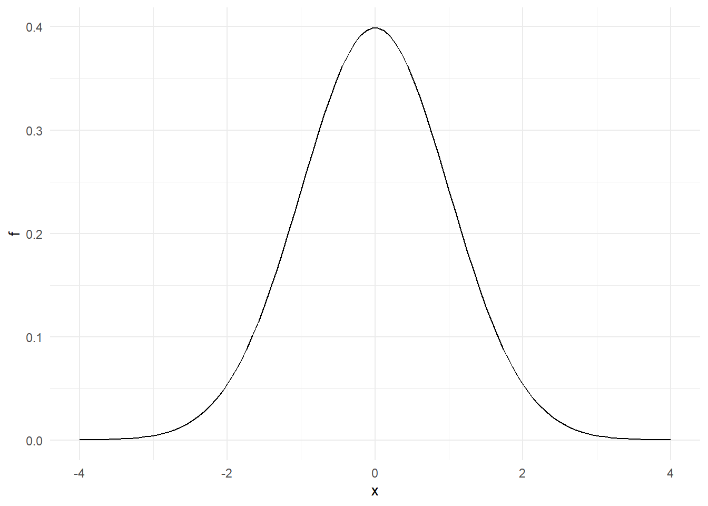
library(tidyverse)
x <- seq(-4, 4, length = 100)
data.frame(x, f2 = pnorm(x)) |>
ggplot(aes(x, f2)) +
geom_line() +
theme_minimal()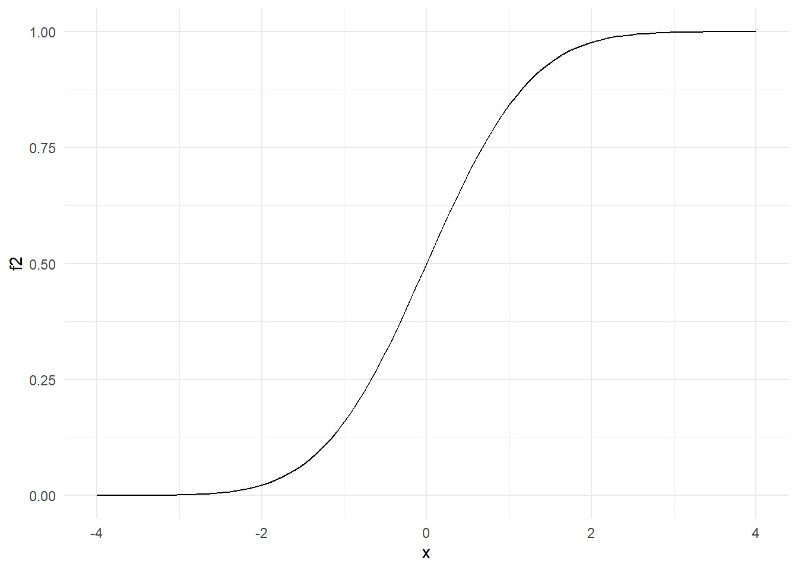
library(tidyverse)
x <- seq(-4, 4, length = 100)
data.frame(x, f3 = rnorm(x)) |>
ggplot(aes(x, f3)) +
geom_line() +
theme_minimal()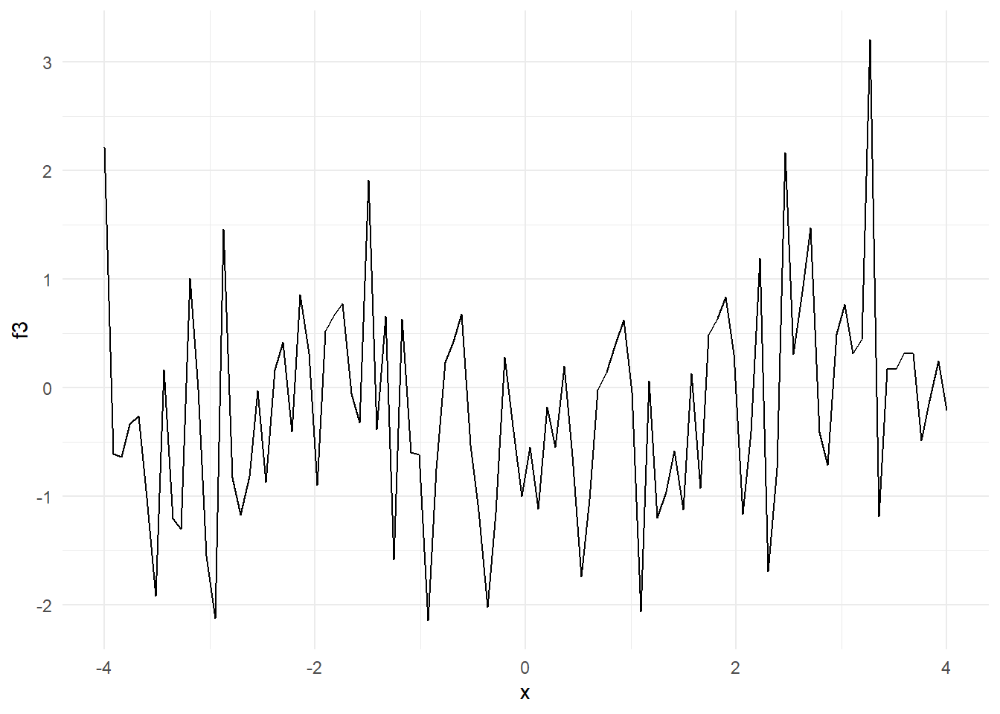
###Monte Carlo Simulations
Key points:
- rnorm(n, avg, s) генерирует n случайных чисел из нормального распределения со средним значением avg и стандартным отклонением s.
- Генерируя случайные числа из нормального распределения, мы можем моделировать данные о высоте с аналогичными свойствами нашему набору данных. Здесь мы генерируем смоделированные данные о высоте, используя нормальное распределение.
Code: Generating normally distributed random numbers
# define x as male heights from dslabs data
library(tidyverse)
library(dslabs)
data(heights)
x <- heights %>% filter(sex=="Male") %>% pull(height)
# generate simulated height data using normal distribution - both datasets should have n observations
n <- length(x)
avg <- mean(x)
s <- sd(x)
simulated_heights <- rnorm(n, avg, s)
# plot distribution of simulated_heights
data.frame(simulated_heights = simulated_heights) |>
ggplot(aes(simulated_heights)) +
geom_histogram(color="black", binwidth = 2)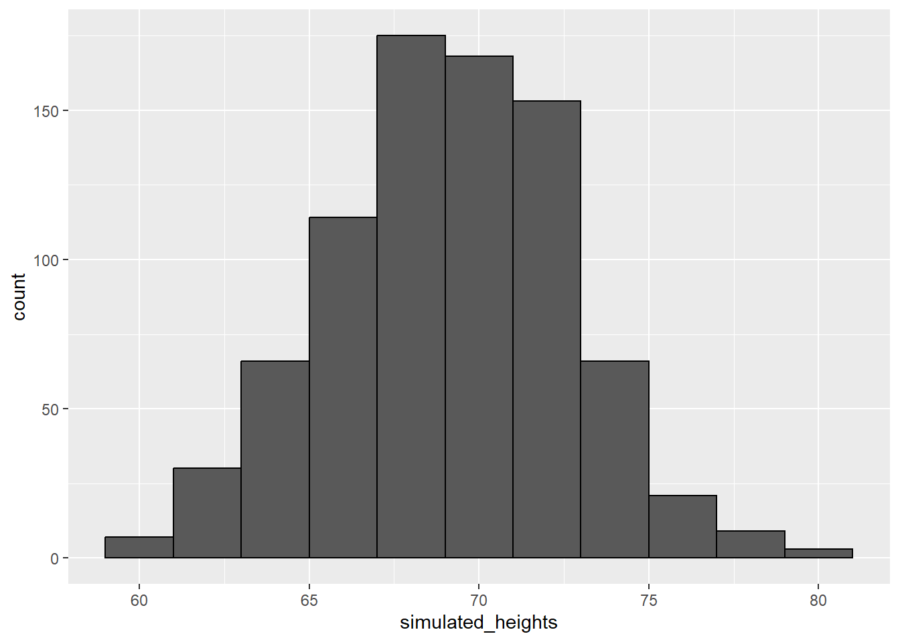
Code: Monte Carlo simulation of tallest person over 7 feet
B <- 10000
tallest <- replicate(B, {
simulated_data <- rnorm(800, avg, s) # generate 800 normally distributed random heights
max(simulated_data) # determine the tallest height
})
mean(tallest >= 7*12) # proportion of times that tallest person exceeded 7 feet (84 inches)[1] 0.021DataCamp Assessment: Continuous Probability
Exercise 1. Distribution of female heights - 1
Предположим, что распределение роста женщин аппроксимируется нормальным распределением со средним значением 64 дюйма и стандартным отклонением в 3 дюйма. Если мы выберем женщину случайным образом, какова вероятность того, что она 5 футов или меньше?
female_avg <- 64
female_sd <- 3
pnorm(5*12,female_avg,female_sd)[1] 0.09121122Exercise 5. Probability of 1 SD from average
Вычислите вероятность того, что рост случайно выбранной женщины находится в пределах 1 SD от среднего роста.
Рассчитайте значения для роста на одно стандартное отклонение выше и ниже среднего.
Рассчитайте вероятность того, что случайно выбранная женщина будет находиться в пределах 1 SD от среднего роста.
minus_sd <- female_avg - female_sd
plus_sd <- female_avg + female_sd
pnorm(plus_sd,female_avg,female_sd) - pnorm(minus_sd, female_avg, female_sd)[1] 0.6826895Определить рост 99 процентиля:
qnorm(p = 0.99, female_avg, female_sd)[1] 70.97904Exercise 7. Distribution of IQ scores
Распределение баллов IQ примерно соответствует норме. Среднее значение равно 100, а стандартное отклонение равно 15. Предположим, вы хотите узнать распределение людей с самым высоким IQ в вашем школьном округе, где ежегодно рождается 10 000 человек.
Сгенерируйте 10 000 показателей IQ 1000 раз с помощью моделирования методом Монте-Карло. Составьте гистограмму самых высоких показателей IQ.
Используйте функцию rnorm для генерации случайного распределения из 10 000 значений с заданным средним значением и стандартным отклонением.
Используйте функцию max, чтобы вернуть наибольшее значение из предоставленного вектора.
Повторите предыдущие шаги в общей сложности 1000 раз.
Сохраните вектор из 1000 лучших показателей IQ как наивысший IQ.
Постройте гистограмму значений, используя функцию hist.
iq <- rnorm(n = 10000, mean = 100, sd = 15)
max(iq)[1] 161.7492b <- 1000
func_iq <- replicate(b, {
iq <- rnorm(n = 10000, mean = 100, sd = 15)
max <- max(iq)
max
})
hist(func_iq)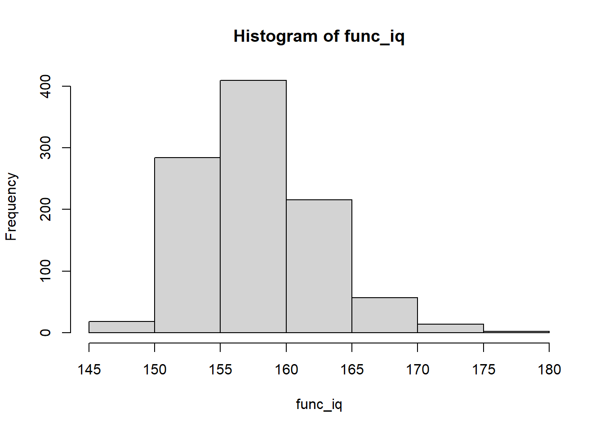
Assessment: Continuous Probability
Questions 1 and 2: ACT scores, part 1
ACT - это стандартизированный вступительный тест в колледж, используемый в Соединенных Штатах. Все четыре вопроса, состоящие из нескольких частей, в этом тестировании предполагают имитацию некоторых результатов теста ACT и ответы на вероятностные вопросы о них.
За трехлетний период 2016-2018 гг. баллы по стандартизированным тестам ACT распределялись приблизительно нормально со средним значением 20,9 и стандартным отклонением 5,7. (Реальные баллы ACT - это целые числа от 1 до 36, но мы проигнорируем эту деталь и вместо этого будем использовать непрерывные значения.) Сначала мы смоделируем набор данных о результатах теста ACT и ответим на некоторые вопросы по этому поводу.
Установите начальное значение равным 16, затем используйте rnorm() для генерации нормального распределения из 10000 тестов со средним значением 20,9 и стандартным отклонением 5,7. Сохраните эти значения как act_scores. Вы будете использовать этот набор данных в этих четырех вопросах, состоящих из нескольких частей.
set.seed(16)
act_mean <- 20.9
act_sd <- 5.7
act_scores <- rnorm(10000, act_mean, act_sd)
mean(act_scores)[1] 20.84012sd(act_scores)[1] 5.675237#A perfect score is 36 or greater (the maximum reported score is 36). In act_scores, how many perfect scores are there out of 10,000 simulated tests?
(1 - pnorm(36, 20.9, 5.7)) *10000[1] 40.3505act_scores_df <- data.frame(act_scores)
length(act_scores_df |>
filter(act_scores >=36) |>
pull())[1] 41sum(act_scores >= 36)[1] 41# In act_scores, what is the probability of an ACT score greater than 30?
1 - pnorm(31,act_mean, act_sd)[1] 0.0382031mean(act_scores > 30)[1] 0.0527# In act_scores, what is the probability of an ACT score less than or equal to 10?
pnorm(10, act_mean, act_sd)[1] 0.0279201mean(act_scores <= 10)[1] 0.0282x <- seq(1,36,1)
f_x <- dnorm(x, 20.9, 5.7)
plot(x,f_x)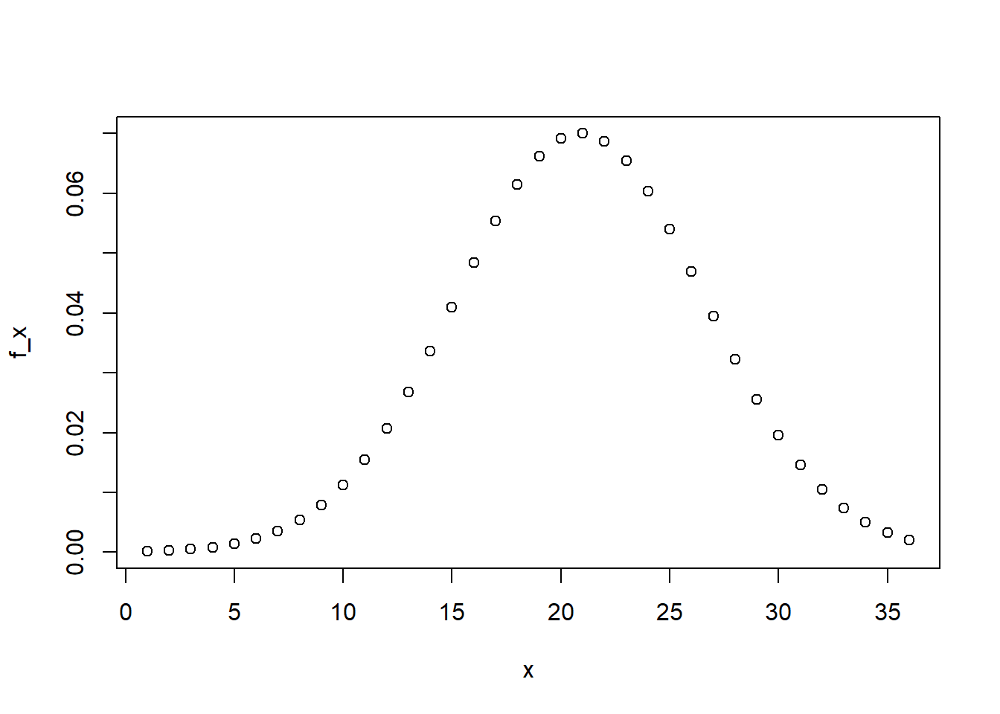
Questions 3 and 4: ACT scores, part 2
В этом вопросе, состоящем из 3 частей, вы преобразуете необработанные оценки ACT в Z-баллы и ответите на некоторые вопросы о них.
Преобразуйте act_scores в Z-баллы. Напомним из визуализации данных (второй курс из этой серии), что для стандартизации значений (преобразования значений в Z-баллы, то есть значений, распределенных со средним значением, равным 0, и стандартным отклонением, равным 1), вы должны вычесть среднее значение, а затем разделить на стандартное отклонение. Используйте среднее значение и стандартное отклонение act_scores, а не исходные значения, используемые для генерации случайных результатов теста.
act_scores_z <- (act_scores - mean(act_scores))/sd(act_scores)
# What is the probability of a Z-score greater than 2 (2 standard deviations above the mean)?
mean(act_scores_z > 2)[1] 0.0233# Какое значение балла ACT соответствует 2 стандартным отклонениям выше среднего (Z = 2)?
2*sd(act_scores) + mean(act_scores)[1] 32.1906Z-балл, равный 2, примерно соответствует 97,5-му процентилю.
Используйте qnorm() для определения 97,5-го процентиля нормально распределенных данных со средним значением и стандартным отклонением, наблюдаемыми в act_scores.
# What is the 97.5th percentile of act_scores?
qnorm(p = 0.975, mean(act_scores), sd(act_scores))[1] 31.96338В этом вопросе, состоящем из 4 частей, вы напишете функцию для создания CDF для оценок ACT.
Напишите функцию, которая принимает значение и выдает вероятность того, что оценка ACT будет меньше или равна этому значению (CDF). Примените эту функцию к диапазону от 1 до 36.
# Каков минимальный целочисленный балл, чтобы вероятность этого балла или ниже была не менее 0,95?
cdf <- sapply(1:36, function (x){
mean(act_scores <= x)
})
min(which(cdf >= .95))[1] 31# Используйте qnorm() для определения ожидаемого 95-го процентиля, значения, для которого вероятность получения этого балла или ниже равна 0,95, учитывая средний балл 20,9 и стандартное отклонение 5,7. Каков ожидаемый 95-й процентиль баллов ACT?
qnorm(p = 0.95, mean(act_scores), sd(act_scores) )[1] 30.17506# Как обсуждалось в курсе визуализации данных, мы можем использовать quantile() для определения выборочных квантилей из данных.
# Создайте вектор, содержащий квантили для p <- seq(0,01, 0,99, 0,01), с 1-го по 99-й процентили данных act_scores. Сохраните их как sample_quantiles.
# В каком процентиле находится оценка 26?
# Ваш ответ должен быть целым числом (например, 60), а не процентом или дробью. Обратите внимание, что оценка между 98-м и 99-м процентилями должна рассматриваться, например, как 98-й процентиль, и что номера квантилей используются в качестве имен для вектора sample_quantiles.
p <- seq(0.01, 0.99, 0.01)
sample_quantiles <- quantile(act_scores, p)
names(sample_quantiles[max(which(sample_quantiles < 26))])[1] "82%"# Создайте соответствующий набор теоретических квантилей, используя qnorm() для интервала p <- seq(0.01, 0.99, 0.01) со средним значением 20.9 и стандартным отклонением 5.7. Сохраните их как theoretical_quantiles. Составьте QQ-график, отображающий sample_quantiles по оси y в сравнении с theoretical_quantiles по оси x.
# Какой из следующих графиков правильный?
p <- seq(0.01, 0.99, 0.01)
sample_quantiles <- as.vector(sample_quantiles)
theoretical_quantiles <- qnorm(p, mean = act_mean, sd = act_sd)
df <- data_frame(sample_quantiles, theoretical_quantiles)Warning: `data_frame()` was deprecated in tibble 1.1.0.
ℹ Please use `tibble()` instead.ggplot(df, aes(theoretical_quantiles ,sample_quantiles)) +
geom_point()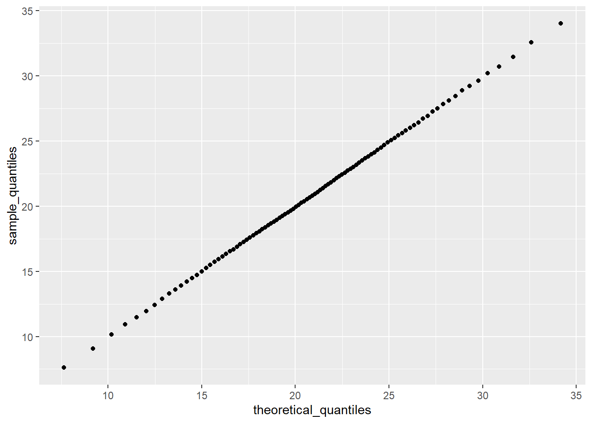
Section 3 Overview
Раздел 3 знакомит вас со случайными величинами, моделями выборки и Центральной предельной теоремой.
Раздел 3 разделен на две части:
Случайные величины и модели выборки Центральная предельная теорема. После завершения раздела 3 вы будете:
понимать, что такое случайные величины,
как их генерировать и правильные математические обозначения для их использования.
уметь использовать модели выборки для оценки характеристик большей совокупности.
уметь объяснять разницу между распределением и вероятностным распределением.
поймите Центральную предельную теорему и закон больших чисел.
В конце раздела 3 приведены 2 задания, в которых используется платформа DataCamp, чтобы вы могли попрактиковаться в своих навыках программирования, а также набор вопросов на платформе edX.
Этот раздел соответствует следующему разделу учебника курса. http://rafalab.dfci.harvard.edu/dsbook/random-variables.html
Мы рекомендуем вам, пользователям, в интерактивном режиме проверить свои ответы и продолжить обучение.
Random Variables
Key points
Случайные величины - это числовые результаты, возникающие в результате случайных процессов.
Статистический вывод предлагает основу для количественной оценки неопределенности, обусловленной случайностью.
Code: Modeling a random variable
# define random variable x to be 1 if blue, 0 otherwise
beads <- rep(c("red", "blue"), times = c(2, 3))
x <- ifelse(sample(beads, 1) == "blue", 1, 0)
# demonstrate that the random variable is different every time
ifelse(sample(beads, 1) == "blue", 1, 0)[1] 1ifelse(sample(beads, 1) == "blue", 1, 0)[1] 1ifelse(sample(beads, 1) == "blue", 1, 0)[1] 1Sampling Models
Key points
Модель выборки моделирует случайное поведение процесса при выборке данных из корзины.
Распределение вероятностей случайной величины - это вероятность попадания наблюдаемого значения в любой заданный интервал. Мы можем определить CDF \[F(a) = \mbox{Pr}(S \leq a)\] для ответа на вопросы, связанные с вероятностью нахождения S в любом интервале.
Среднее значение многих розыгрышей случайной величины называется ее математическим ожиданием. (expected value)
Стандартное отклонение многих розыгрышей случайной величины называется ее стандартной ошибкой.
Monte Carlo simulation: Chance of casino losing money on roulette
Мы строим модель выборки для случайной величины ‘S’, которая представляет общий выигрыш казино.
# sampling model 1: define urn, then sample
color <- rep(c("Black", "Red", "Green"), c(18, 18, 2)) # define the urn for the sampling model
n <- 1000
X <- sample(ifelse(color == "Red", -1, 1), n, replace = TRUE)
X[1:10] [1] 1 1 -1 1 1 1 -1 1 1 1# sampling model 2: define urn inside sample function by noting probabilities
# модель выборки 2: определите urn внутри функции выборки, отметив вероятности
x <- sample(c(-1, 1), n, replace = TRUE, prob = c(9/19, 10/19)) # 1000 independent draws
S <- sum(x) # total winnings = sum of draws
S[1] -14Мы используем модель выборки для проведения моделирования методом Монте-Карло и используем результаты для оценки вероятности того, что казино потеряет деньги.
n <- 1000 # number of roulette players
B <- 10000 # number of Monte Carlo experiments
S <- replicate(B, {
X <- sample(c(-1,1), n, replace = TRUE, prob = c(9/19, 10/19)) # simulate 1000 spins
sum(X) # determine total profit
})
mean(S < 0) # probability of the casino losing money[1] 0.0456# Мы можем построить гистограмму наблюдаемых значений S, а также нормальную кривую плотности, основанную на среднем значении и стандартном отклонении S.
library(tidyverse)
s <- seq(min(S), max(S), length = 100) # sequence of 100 values across range of S
normal_density <- data.frame(s = s, f = dnorm(s, mean(S), sd(S))) # generate normal density for S
data.frame (S = S) %>% # make data frame of S for histogram
ggplot(aes(S, ..density..)) +
geom_histogram(color = "black", bins = 30) +
ylab("Probability") +
geom_line(data = normal_density, mapping = aes(s, f), color = "blue")Warning: The dot-dot notation (`..density..`) was deprecated in ggplot2 3.4.0.
ℹ Please use `after_stat(density)` instead.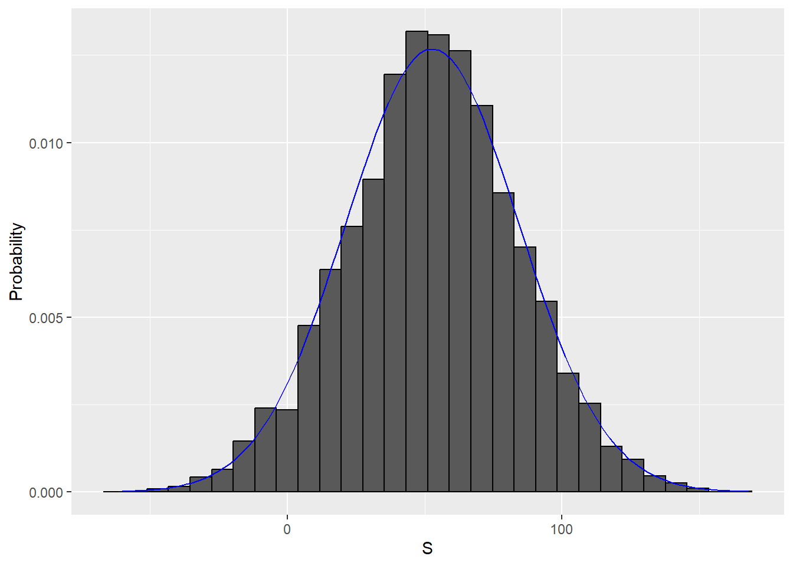
Distributions versus Probability Distributions
РАФАЭЛЬ ИРИЗАРРИ:
Прежде чем мы продолжим, давайте проведем тонкое, но важное различие и установим связь между распределением списка чисел, которое мы рассмотрели в нашем модуле визуализации данных, и распределением вероятностей, о котором мы говорим здесь. Ранее мы описывали, как любой список чисел, назовем его от x1 до xn, имеет распределение. Определение довольно простое. Мы определяем заглавную букву F в a как функцию, которая отвечает на вопрос, какая доля списка меньше или равна a. Поскольку они являются полезными сводками, когда распределение приблизительно нормальное, мы определяем среднее значение и стандартное отклонение. Они определяются с помощью простой операции со списком. В r мы просто вычисляем среднее значение и стандартное отклонение таким образом, например. Случайная величина x имеет функцию распределения. Чтобы определить это, нам не нужен список чисел. Это теоретическая концепция. В данном случае, чтобы определить распределение, мы определяем заглавную букву F для a как функцию, которая отвечает на вопрос, какова вероятность того, что x меньше или равно a. Списка номеров нет.
Однако, если x определяется путем извлечения из урны с числами в ней, то существует список, список чисел внутри урны. В этом случае распределение этого списка является распределением вероятности x, а среднее значение и стандартное отклонение этого списка являются ожидаемым значением и стандартными ошибками случайной величины. Другой способ подумать об этом, не связанный с urn, - запустить моделирование методом Монте-Карло и сгенерировать очень большой список результатов x. Эти результаты представляют собой список чисел. Распределение этого списка будет очень хорошим приближением распределения вероятности x. Чем длиннее список, тем лучше аппроксимация. Среднее значение и стандартное отклонение этого списка будут приблизительно соответствовать ожидаемому значению и стандартной ошибке случайной величины.
Key points
Случайная величина X имеет функцию распределения вероятностей F(a), которая определяет Pr(X <= a) по всем значениям a .
Любой список чисел имеет распределение. Функция распределения вероятностей случайной величины определяется математически и не зависит от списка чисел.
Результаты моделирования методом Монте-Карло с достаточно большим количеством наблюдений будут приближать распределение вероятности X .
Если случайная величина определена как взятая из urn:
Функция распределения вероятности случайной величины определяется как распределение списка значений в urn.
Ожидаемое значение случайной величины - это среднее значение значений в urn.
Стандартная ошибка одного розыгрыша случайной величины - это стандартное отклонение значений urn.
Notation for Random Variables
РАФАЭЛЬ ИРИЗАРРИ:
Обратите внимание, что в учебниках по статистике заглавные буквы используются для обозначения случайных величин, и здесь мы следуем этому соглашению. Строчные буквы используются для наблюдаемых значений. Вы увидите некоторые обозначения, которые включают в себя и то, и другое. Например, вы увидите события, определенные как capital X, меньшие или равные small cap x. Здесь x - случайная величина, что делает его случайным событием. И little x - произвольное значение, а не случайное. Так, например, заглавная буква X может представлять число на броске кубика - это случайное значение, - а маленькая буква x будет представлять фактическое значение, которое мы видим. Таким образом, в данном случае вероятность того, что большой X будет равен маленькому x, равна 1 из 6 независимо от значения маленького x . Обратите внимание, что это обозначение немного странное, потому что мы задаем вопросы о вероятности, поскольку большой x не является наблюдаемой величиной. Вместо этого это случайная величина, которую мы увидим в будущем. Мы можем говорить о том, чего мы ожидаем, какие значения вероятны, но не о том, что это такое. Но как только у нас есть данные, мы действительно видим реализацию big x, поэтому специалисты по обработке данных говорят о том, что могло бы быть, но после того, как мы увидим, что произошло на самом деле.
Central Limit Theorem
Key points
Центральная предельная теорема (CLT) гласит, что распределение суммы случайной величины аппроксимируется нормальным распределением.
Ожидаемое значение случайной величины, \(\mbox{E}[X] = \mu\) , является средним значением значений в urn. Это представляет собой ожидание одного розыгрыша.
Стандартная ошибка одного розыгрыша случайной величины - это стандартное отклонение значений в urn.
Ожидаемое значение суммы розыгрышей - это количество розыгрышей, умноженное на ожидаемое значение случайной величины.
Стандартная ошибка суммы независимых розыгрышей случайной величины равна квадратному корню из числа розыгрышей, умноженного на стандартное отклонение urn.
Уравнения
Эти уравнения применимы к случаю, когда есть только два исхода, \(a\) и \(b\) с пропорциями \(p\) и \(1-p\) соответственно. Приведенные выше общие принципы также применимы к случайным величинам с более чем двумя исходами.
Expected value of a random variable: Ожидаемое значение случайной величины:
\[ ap + b (1-p) \]
Ожидаемое значение суммы n розыгрышей случайной величины:
\[
n \times (ap + b(1-p))
\]
Стандартное отклонение урны с двумя значениями:
\[ \mid b-a \mid \sqrt{p(1-p)} \]
Стандартная ошибка суммы n розыгрышей случайной величины:
\[ \sqrt {n} \mid b-a \mid \sqrt {p(1-p)} \]
Assesment: Random Variables and Sampling Models
Exercise 1. American Roulette probabilities
Колесо американской рулетки имеет 18 красных, 18 черных и 2 зеленые ячейки. Каждая красная и черная ячейки ассоциируется с числом от 1 до 36. В двух оставшихся зеленых ячейках указаны “0” и “00”. Игроки делают ставки на то, в какую лузу, по их мнению, попадет шарик после вращения колеса. Игроки могут делать ставки на определенное число (0, 00, 1-36) или цвет (красный, черный или зеленый).
Какова вероятность того, что мяч попадет в зеленую лузу?
# Определите переменную p_green как вероятность попадания шара в зеленую лузу.
green <- 2
black <- 18
red <- 18
p_green <- green/(green+black+red)
p_green[1] 0.05263158Exercise 2. American Roulette payout
В американской рулетке выплата за выигрыш на зеленом составляет 17 долларов. Это означает, что если вы поставите 1 доллар и выпадет на зеленом, вы получите 17 долларов в качестве приза.
Создайте модель для прогнозирования вашего выигрыша от однократной ставки на зеленом.
# Назначьте переменную `p_not_green` в качестве вероятности того, что мяч не попадет в зеленую лузу
p_not_green <- 1 - p_green
# Создайте модель для прогнозирования случайной величины "X", вашего выигрыша от ставки на зеленый цвет. Попробуйте один раз.
X <- sample(c(17,-1), 1, prob = c(p_green,p_not_green))
# Выведите значение `X` на консоль
X[1] -1Exercise 3. American Roulette expected value
В американской рулетке выплата за выигрыш на зеленом составляет 17 долларов. Это означает, что если вы поставите 1 доллар и он выпадет на зеленом, вы получите 17 долларов в качестве приза.В предыдущем упражнении вы создали модель для прогнозирования вашего выигрыша от ставок на зеленом.
Теперь вычислите ожидаемое значение случайной величины \(X\), которую вы сгенерировали ранее.
# Используя шансы выиграть 17 долларов (p_green) и шансы проиграть 1 доллар (p_not_green), рассчитайте ожидаемый результат ставки на то, что мяч попадет в зеленую лузу.
# Рассчитайте ожидаемый результат (expected outcome), если вы выиграете 17 долларов, если мяч упадет на зеленое поле, и потеряете 1 доллар, если мяч не упадет на зеленое поле
17*p_green + (-1)*(1-p_green)[1] -0.05263158Exercise 4. American Roulette standard error
Стандартная ошибка случайной величины \(X\) показывает нам разницу между случайной величиной и ее ожидаемым значением. Вы вычислили случайную величину в упражнении 2 и ожидаемое значение этой случайной величины в упражнении 3.
Теперь вычислите стандартную ошибку этой случайной величины, которая представляет собой единственный результат после одного вращения колеса рулетки.
# Вычислите стандартную ошибку случайной величины, сгенерированной вами в упражнении 2, или результат любого вращения колеса рулетки.
# Напомним, что выплата за выигрыш на зеленом поле составляет 17 долларов при ставке в 1 доллар.
abs(17 -(- 1)) * sqrt(p_green*(1- p_green))[1] 4.019344Exercise 5. American Roulette sum of winnings
Вы смоделировали результат одного вращения колеса рулетки,\(X\),в упражнении 2.
Теперь создайте случайную величину, которая суммирует ваш выигрыш после 1000 ставок на зеленый цвет.
# Используйте 'set.seed', чтобы убедиться, что результат вашей случайной операции соответствует ожидаемому ответу для этой задачи.
# Укажите количество раз, которое вы хотите выполнить выборку из возможных результатов.
# Используйте функцию 'sample', чтобы вернуть случайное значение из вектора возможных значений.
# Обязательно присвойте вероятность каждому результату и укажите, что вы проводите выборку с заменой.
# Не используйте 'replicate', так как это изменит результаты случайной выборки, и ваш ответ не будет соответствовать оценщику.
green <- 2
black <- 18
red <- 18
p_green <- green / (green+black+red)
p_not_green <- 1-p_green
set.seed(1)
n <- 1000
X <- sample(c(17,- 1), n, replace = TRUE, prob = c(p_green, p_not_green))
S <- sum(X)
S[1] -10Упражнение 6. Ожидаемое значение выигрыша в американскую рулетку
В предыдущем упражнении вы сгенерировали вектор случайных исходов, сделав ставку на зеленый цвет 1000 раз.
Каково ожидаемое значение?
# Используя шансы выиграть 17 долларов (p_green) и шансы проиграть 1 доллар (p_not_green), рассчитайте ожидаемый результат ставки на то, что мяч попадет в зеленую лузу, из 1000 ставок
n*(17*p_green - 1*(1-p_green))[1] -52.63158Упражнение 7. Ожидаемое значение выигрыша в американскую рулетку
В предыдущем упражнении вы вычислили ожидаемое значение исходов 1000 ставок на то, что мяч попадет в зеленую лузу.
Какова стандартная ошибка?
# Вычислите стандартную ошибку случайной величины, которую вы сгенерировали в упражнении 5, или результаты 1000 вращений колеса рулетки.
sqrt(n) * abs(17 - (- 1)) * sqrt(p_green * (1 - p_green))[1] 127.1028Averages and Proportions
- Случайная величина, умноженная на константу
Ожидаемое значение случайной величины, умноженное на константу, равно тому, что константа умножает свое первоначальное ожидаемое значение:
\[ \mbox{E}[aX] = a\mu \] Стандартная ошибка случайной величины, умноженная на константу, равна этой константе, умноженной на ее исходную стандартную ошибку:
\[ \mbox{SE}[aX] = a\sigma \] - сумма многократных розыгрышей случайной величины
Ожидаемое значение суммы розыгрышей случайной величины \(n\) умножается на ее первоначальное ожидаемое значение: \[ \mbox{E}[nX] = n \ mu \] Стандартная ошибка суммы \(n\) розыгрышей случайной величины умножается на\(\sqrt{n}\)ее первоначальную стандартную ошибку:
\[ \mbox{SE}[nX] = \sqrt{n \sigma} \] - Сумма множества различных случайных величин
Ожидаемое значение суммы различных случайных величин - это сумма индивидуальных ожидаемых значений для каждой случайной величины:
\[ \mbox{E}[X_1 + X_2 + \dots + X_n] = \mu_1 + \mu_2 +\dots + \mu_n \] Стандартная ошибка суммы различных случайных величин равна квадратному корню из суммы квадратов отдельных стандартных ошибок:
\[ \mbox{SE}[X_1 + X_2 + \dots + X_n] = \sqrt{\sigma_1^2 + \sigma_2 ^2+ \dots+ \sigma_n^2} \] - Преобразование случайных величин
Если \(X\) является нормально распределенной случайной величиной, и \(a\) и \(b\) являются неслучайными константами, то \(aX+b\) также является нормально распределенной случайной величиной.
Assessment: The Central Limit Theorem
Exercise 1. American Roulette probability of winning money
Упражнения в предыдущей главе касались выигрышей в американской рулетке. В этой главе упражнений мы продолжим рассмотрение примера с рулеткой и добавим Центральную предельную теорему.
В предыдущей главе упражнений вы создали случайную величину , которая является суммой вашего выигрыша после того, как вы несколько раз поставили на грин в американской рулетке.
Какова вероятность того, что вы в конечном итоге выиграете деньги, если сделаете ставку на грин 100 раз?
Выполните пример кода, чтобы определить ожидаемое значение avg и стандартную ошибку se, как вы делали в предыдущих упражнениях.
Используйте функцию pnorm для определения вероятности выигрыша денег.
p_green <- 2 / 38
p_not_green <- 1-p_green
n <- 100
# Рассчитайте "среднее значение", ожидаемый результат 100 вращений, если вы выиграете 17 долларов, когда мяч упадет на зеленое поле, и потеряете 1 доллар, когда мяч не упадет на зеленое поле
avg <- n * (17*p_green + -1*p_not_green)
# Вычислите "se", стандартную ошибку суммы 100 результатов
se <- sqrt(n) * (17 - -1)*sqrt(p_green*p_not_green)
# Используя математическое ожидание "avg" и стандартную ошибку "se", вычислите вероятность того, что вы выиграете деньги, сделав ставку на зеленый цвет, 100 раз.
1- pnorm(0, avg,se) # 55%, что вы проиграете[1] 0.4479091Exercise 2. American Roulette Monte Carlo simulation
Создайте симуляцию по методу Монте-Карло, которая генерирует 10 000 результатов из суммы 100 наилучших.
Вычислите среднее значение и стандартное отклонение результирующего списка и сравните их с ожидаемым значением (-5,263158) и стандартной ошибкой (40,19344) , которые вы рассчитали ранее.
Используйте функцию replicate, чтобы воспроизвести пример кода для B <- 10000 симуляций.
В рамках replicate используйте функцию sample для моделирования n <- 100 исходов либо выигрыша (17), либо проигрыша (-1) для ставки. Используйте порядок c(17, -1) и соответствующие вероятности. Затем используйте функцию sum, чтобы суммировать выигрыши по всем итерациям модели. Обязательно укажите сумму, иначе DataCamp может выйти из строя с ошибкой “Срок действия сеанса истек”.
Use the
meanfunction to compute the average winnings.Use the
sdfunction to compute the standard deviation of the winnings.
p_green <- 2 / 38
p_not_green <- 1-p_green
n <- 100
B <- 10000
set.seed(1)
# Создайте объект с именем "S`, который реплицирует пример кода для итераций "B" и отображает результаты
S <- replicate(B, {
X <- sample(c(17,-1), n , replace = TRUE, prob = c(p_green, p_not_green))
sum(X)
})
mean(S)[1] -5.9086sd(S)[1] 40.30608Exercise 3. American Roulette Monte Carlo vs CLT
В этой главе вы рассчитали вероятность выигрыша денег в американскую рулетку с помощью CLT.
Теперь рассчитайте вероятность выигрыша денег с помощью моделирования Монте-Карло. Моделирование методом Монте-Карло из предыдущего упражнения уже было предварительно запущено для вас, в результате чего были получены переменные, содержащие список из 10 000 смоделированных результатов. - Используйте функцию mean для вычисления вероятности выигрыша денег в результате моделирования по методу Монте-Карло, S
mean(S>0)[1] 0.4232Exercise 4. American Roulette Monte Carlo vs CLT comparison
Результат по методу Монте-Карло и приближение CLT для вероятности потери денег после 100 ставок близки, но не настолько. Чем это может объясняться?
- The CLT does not work as well when the probability of success is small.
Exercise 5. American Roulette average winnings per bet
Теперь создайте случайную величину \(Y\) , которая содержит ваш средний выигрыш по ставке после 10 000 ставок на зеленый цвет.
Запустите одиночную симуляцию Монте-Карло для 10 000 ставок, используя следующие шаги. (You do not need to replicate the sample code.)
Укажите \(n\) как количество раз, которое вы хотите выполнить выборку из возможных результатов.
Используйте функцию sample, чтобы вернуть \(n\) значений из вектора возможных значений: выигрыш 17 долларов или проигрыш 1 доллар. Обязательно присвойте вероятность каждому исходу и укажите, что вы проводите выборку с заменой.
Рассчитайте средний результат по каждой сделанной ставке, используя функцию среднего значения.
set.seed(1)
n <- 10000
p_green <- 2 / 38
p_not_green <- 1 - p_green
# Create a vector called `X` that contains the outcomes of `n` bets
X <- sample(c(17,-1), n, replace = TRUE, prob = c(p_green, p_not_green))
# Define a variable `Y` that contains the mean outcome per bet. Print this mean to the console.
Y <- mean(X)
Y[1] 0.008Exercise 6. American Roulette per bet expected value
Каково ожидаемое значение среднего результата по ставке после 10 000 ставок на зеленый цвет?
Используя шансы выиграть 17 долларов (p_green) и шансы проиграть 1 доллар (p_not_green), рассчитайте ожидаемый результат ставки на то, что мяч попадет в зеленую лузу.
Используйте формулу ожидаемого значения, а не моделирование методом Монте-Карло.
Выведите это значение на консоль (не присваивайте его переменной).
p_green <- 2 / 38
p_not_green <- 1 - p_green
n <- 10000
17 * p_green + -1* p_not_green[1] -0.05263158Exercise 7. American Roulette per bet standard error
Какова стандартная ошибка среднего результата за 10 000 вращений?
n <- 10000
abs(17 - (-1)) * sqrt(p_green * p_not_green)/sqrt(n)[1] 0.04019344Exercise 8. American Roulette winnings per game are positive
Какова вероятность того, что ваш выигрыш будет положительным после 10 000 ставок на зеленый цвет?
Выполните код, который мы написали в предыдущих упражнениях, чтобы определить среднюю и стандартную ошибку.
Используйте функцию pnorm, чтобы определить вероятность выигрыша более 0 долларов.
avg <- 17*p_green + -1*p_not_green
se <- 1/sqrt(n) * (17 - -1)*sqrt(p_green*p_not_green)
1 - pnorm(0, avg,se)[1] 0.0951898Exercise 9. American Roulette Monte Carlo again
Уведомление
Создайте симуляцию методом Монте-Карло, которая генерирует 10 000 исходов , средний исход из 10 000 ставок на грин.
Вычислите среднее значение и стандартное отклонение результирующего списка, чтобы подтвердить результаты предыдущих упражнений, используя Центральную предельную теорему.
Используйте функцию replicate для моделирования 10 000 итераций серии из 10 000 ставок.
Каждая итерация внутри replicate должна имитировать 10 000 ставок и определять средний результат этих 10 000 ставок.
Если вы забудете взять среднее значение, Data Camp завершит работу с ошибкой “Сеанс истек”.
Найдите среднее значение из 10 000 средних результатов. Выведите это значение на консоль.
Вычислите стандартное отклонение 10 000 симуляций. Выведите это значение на консоль.
n <- 10000
B <- 10000
set.seed(1)
# Сгенерировать вектор `S`, содержащий средние исходы 10 000 ставок, смоделированных 10 000 раз
S <- replicate(B, {
X <- sample(c(17,-1), n , replace = TRUE, prob = c(p_green, p_not_green))
mean(X)
})
mean(S)[1] -0.05223142sd(S)[1] 0.03996168Exercise 10. American Roulette comparison
В предыдущем упражнении вы определили вероятность выигрыша более 0 долларов, сделав ставку на зеленый цвет 10 000 раз, используя Центральную предельную теорему. Затем вы использовали моделирование по методу Монте-Карло, чтобы смоделировать средний результат ставок на грин 10 000 раз в течение 10 000 смоделированных серий ставок.
Какова вероятность выигрыша более 0 долларов, согласно оценке вашего моделирования по методу Монте-Карло? Код для генерации векторов, содержащий средние результаты 10 000 ставок, смоделированных 10 000 раз, уже был запущен для вас.
Рассчитайте вероятность выигрыша более 0 долларов в симуляторе Монте-Карло из предыдущего упражнения, используя функцию среднего значения.
Вам не нужно запускать другое моделирование: результаты моделирования находятся в вашем рабочем пространстве в виде вектора S.
mean(S > 0)[1] 0.0977Assesment_EDX
Questions 1 : SAT testing
SAT - это стандартизированный вступительный тест в колледж, используемый в Соединенных Штатах. В следующих двух вопросах, состоящих из нескольких частей, вам будут заданы некоторые вопросы о тестировании SAT.
Этот вопрос состоит из 6 частей, в котором вам предлагается определить некоторые вероятности того, что произойдет, если студент угадает все свои ответы на SAT. Используйте приведенную ниже информацию для обоснования своих ответов на следующие вопросы.
Старая версия вступительного экзамена SAT в колледж предусматривала штраф в размере -0,25 балла за каждый неправильный ответ и начисление 1 балла за правильный ответ. Количественный тест состоял из 44 вопросов с множественным выбором, в каждом из которых было 5 вариантов ответа. Предположим, студент выбирает ответы, угадывая ответы на все вопросы теста.
#Какова вероятность правильного ответа на один вопрос?
p <- 1/5
p[1] 0.2# Каково ожидаемое значение баллов за угадывание по одному вопросу?
p_correct <- 1/5
p_incorrect <- 1 - p_correct
point_cor <- 1
point_incor <- -0.25
EV <- p_correct * point_cor + p_incorrect * point_incor
EV[1] 0# Каков ожидаемый результат угадывания по всем 44 вопросам?
n <- 44
EV_mu <- n * (p_correct * point_cor + p_incorrect * point_incor)
EV_mu[1] 0# Какова стандартная ошибка угадывания по всем 44 вопросам?
SE_points <- (abs(1 - - 0.25) * sqrt(p_correct * (p_incorrect))) * sqrt(n)
SE_points[1] 3.316625# Используйте Центральную предельную теорему, чтобы определить вероятность того, что угадавший студент наберет 8 баллов или выше по тесту.
1 - pnorm(8, EV_mu, SE_points)[1] 0.007930666# Установите начальное значение равным 21, затем запустите моделирование методом Монте-Карло с участием 10 000 студентов, угадывающих результаты теста.
# Какова вероятность того, что угадавший студент наберет 8 баллов или выше?
set.seed(21)
n <- 10000
S <- replicate(n, {
X <- sample(c(1,-0.25), 44, replace = TRUE, prob = c(p_correct, p_incorrect))
sum(X)
})
mean(S >=8)[1] 0.008Question 2
Недавно в SAT были внесены изменения, чтобы сократить количество вариантов множественного выбора с 5 до 4, а также исключить штраф за угадывание. В этом вопросе, состоящем из двух частей, вы узнаете, как это повлияло на ожидаемые значения теста.
# Предположим, что количество вариантов множественного выбора равно 4 и что штраф за угадывание не предусмотрен - то есть неправильный вопрос дает оценку 0.
# Каково ожидаемое значение оценки при угадывании в этом новом тесте?
ev_new <- 44*(1/4*1 + 3/4*0)
ev_new[1] 11# Рассмотрим диапазон вероятностей правильного ответа p <- seq(0,25, 0,95, 0,05), представляющий диапазон навыков учащихся.
# Каково наименьшее значение p, при котором вероятность набрать более 35 баллов превышает 80%?
p <- seq(0.25, 0.95, 0.05)
p [1] 0.25 0.30 0.35 0.40 0.45 0.50 0.55 0.60 0.65 0.70 0.75 0.80 0.85 0.90 0.95Question 3: Betting on Roulette
Казино предлагает специальную ставку в рулетку, которая представляет собой ставку на пять лузов (00, 0, 1, 2, 3) из 38 общих лузов. Ставка выплачивается 6 к 1. Другими словами, проигрышная ставка приносит - 1 доллар, а успешная - 6 долларов. Игрок хочет знать, какова вероятность потери денег, если он сделает 500 ставок на roulette House Special. Следующий вопрос, состоящий из 7 частей, просит вас выполнить некоторые расчеты, связанные с этим сценарием.
# Какова ожидаемая величина выплаты по одной ставке?
p_win <- 5/38
p_not_win <- 1 - p_win
win_bet <- 6
lose_bet <- -1
exp_val_1 <- p_win * 6 + p_not_win * (-1)
exp_val_1[1] -0.07894737# What is the standard error of the payout for one bet?
p_win <- 5/38
p_not_win <- 1 - p_win
win_bet <- 6
lose_bet <- -1
se_one <- abs(win_bet - lose_bet) * sqrt(p_win * p_not_win)
se_one[1] 2.366227# What is the expected value of the average payout over 500 bets? Каково ожидаемое значение средней выплаты по 500 ставкам?
# Помните, что существует разница между ожидаемым значением среднего значения и ожидаемым значением суммы.
p_win <- 5/38
p_not_win <- 1 - p_win
win_bet <- 6
lose_bet <- -1
n <- 500
se_500 <- se_one/sqrt(n)
se_500[1] 0.1058209# What is the standard error of the sum of 500 bets?
se_summ <- sqrt(n) * abs(win_bet - lose_bet) * sqrt(p_win * p_not_win)
se_summ[1] 52.91045# What is the expected value of the sum of 500 bets?
ev_sum <- exp_val_1 * 500
ev_sum[1] -39.47368# Use pnorm() with the expected value of the sum and standard error of the sum to calculate the probability of losing money over 500 bets, Pr = X <= 0.
pnorm(0, ev_sum, se_summ)[1] 0.7721805Section 4 Overview
Раздел 4 знакомит вас с большой короткой позицией.
После завершения раздела 4 вы:
поймете взаимосвязь между моделями выборки и процентными ставками, определяемыми банками.
поймете, как можно установить процентные ставки, чтобы свести к минимуму вероятность того, что банк потеряет деньги.
поймите, как неуместные предположения о независимости способствовали финансовому кризису 2007 года.
Этот раздел соответствует этому разделу в учебнике курса. https://rafalab.github.io/dsbook/random-variables.html#case-study-the-big-short
4.1 The Big Short
Correction
At 2:35, the displayed results of the code are incorrect. Here are the correct values:
n*(p*loss_per_foreclosure + (1-p)*0)
[1] -4e+06
sqrt(n)*abs(loss_per_foreclosure)*sqrt(p*(1-p))
[1] 885438
СоветKey points
Процентные ставки по кредитам устанавливаются с использованием вероятности невозврата кредита для расчета ставки, которая сводит к минимуму вероятность потери денег.
Мы можем определить результат по кредитам как случайную величину. Мы также можем определить сумму результатов по многим кредитам как случайную величину.
Центральная предельная теорема может быть применена для соответствия нормальному распределению суммы прибыли по многим кредитам. Мы можем использовать свойства нормального распределения для расчета процентной ставки, необходимой для обеспечения определенной вероятности потери денег при заданной вероятности дефолта.
Code: Interest rate (Процентная ставка) sampling model
n <- 1000
loss_per_foreclosure <- -200000
p <- 0.02
defaults <- sample( c(0,1), n, prob=c(1-p, p), replace = TRUE)
sum(defaults * loss_per_foreclosure)[1] -6400000Code: Interest rate (Процентная ставка) Monte Carlo simulation
B <- 10000
losses <- replicate(B, {
defaults <- sample( c(0,1), n, prob=c(1-p, p), replace = TRUE)
sum(defaults * loss_per_foreclosure)
})
data.frame(losses_in_mln = losses/10^6) |>
ggplot(aes(losses_in_mln))+
geom_density(fill = 'green', alpha = 0.3, color = "darkgray")+
theme_minimal()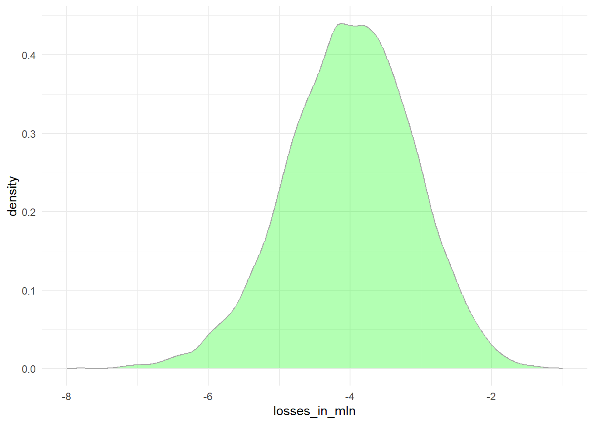
Code: Plotting expected losses
library(tidyverse)
data.frame(losses_in_millions = losses/10^6) |>
ggplot(aes(losses_in_millions)) +
geom_histogram(binwidth = 0.6, col = "black", fill = "lightgray")+
theme_minimal()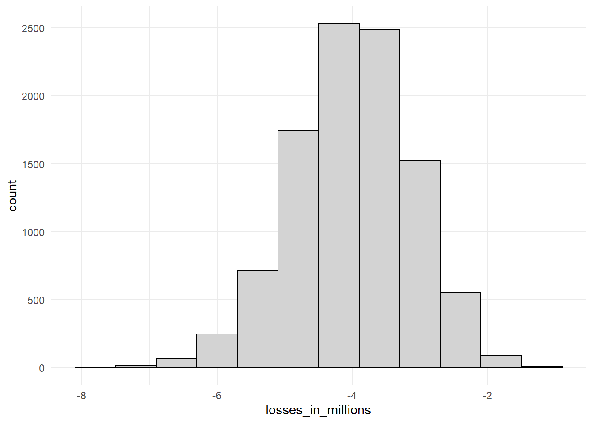
Code: Expected value and standard error of the sum of 1,000 loans (кредиты)
n*(p*loss_per_foreclosure + (1-p)*0) # expected value [1] -4e+06sqrt(n)*abs(loss_per_foreclosure)*sqrt(p*(1-p)) # standard error[1] 885437.7Code: Calculating interest rates for expected value of 0
Мы можем рассчитать сумму \(x\) , которую нужно добавить к каждому кредиту, чтобы ожидаемое значение было равно 0, используя уравнение \(lp+x * (1-p) = 0\)
Обратите внимание, что это уравнение является определением ожидаемого значения с учетом убытка при потере права выкупа \(l\) с вероятностью потери права выкупа \(p\) и прибыли \(x\) , если потери права выкупа нет (вероятность \(1-p\)).
x = - loss_per_foreclosure*p/(1-p)
x[1] 4081.633По кредиту в размере 180 000 долларов это равно процентной ставке в размере:
x/180000[1] 0.02267574Уравнения: Расчет процентной ставки для 1%-ной вероятности потери денег
Мы хотим рассчитать значение \(x\), для которого \(Pr (S<0) = 0.01\) . Ожидаемое значение \(E[S]\)суммы \(n = 1000\) займов с учетом наших определений \(x\), \(l\) и \(p\) равно:
\[ \mu_S = (lp + x(1-p))*n \]
И стандартная ошибка суммы \(n\) займов \(\mbox{SE}[S]\) , равна:
\[ \sigma_S = \mid x-l\mid \sqrt{np(1-p)} \]
Поскольку мы знаем, что такое определение Z-балла : \(Z = \frac{x - \mu}{\sigma}\) , мы знаем, что
\(\mbox{Pr}(S < 0) = \mbox{Pr}(Z < -\frac{\mu}{\sigma})\). \(\mbox{Pr}(S < 0) = 0.01\), значит:
\[ \mbox{Pr}\left(Z < \frac{- \{ lp + x(1-p)\}n}{(x-l) \sqrt{np(1-p)}}\right) = 0.01 \] z<-qnorm(0.01) дает нам значение \(z\), для которого \(\mbox{Pr}(Z \leq z) = 0.01\), что означает:
\[ z = \frac{- \{ lp + x(1-p)\}n} {(x-l) \sqrt{n p (1-p)}} \]
Решение для \(x\) дает:
\[ x = - l \frac{ np - z \sqrt{np(1-p)}}{n(1-p) + z \sqrt{np(1-p)}} \] #### Code: Calculating interest rate for 1% probability of losing money
l <- loss_per_foreclosure
z <- qnorm(0.01)
x <- -l*( n*p - z*sqrt(n*p*(1-p)))/ ( n*(1-p) + z*sqrt(n*p*(1-p)))
x/180000 # interest rate[1] 0.03471767loss_per_foreclosure*p + x*(1-p) # expected value of the profit per loan[1] 2124.198n*(loss_per_foreclosure*p + x*(1-p)) # expected value of the profit over n loans[1] 2124198Code: Monte Carlo simulation for 1% probability of losing money
B <- 100000
profit <- replicate(B, {
draws <- sample( c(x, loss_per_foreclosure), n,
prob=c(1-p, p), replace = TRUE)
sum(draws)
})
mean(profit) # expected value of the profit over n loans[1] 2126219mean(profit<0) # probability of losing money[1] 0.0125use_python("C:/Users/alina/AppData/Local/Programs/Python/Python312/python.exe", required = TRUE)